1
1 2
2 3
3 4
4 5
5 6
6 7
7#glowup #glowuptips #selfimprovement #menglowup #fyp
@deseanhunt5 · 2847 likes — You don’t have to grow your hair
@slimeballvonte · 605 likes — Cucumber water really debloat your face?
@inkirkwetrust0 · 413 likes — What hair
Swipes, briefs and the starter guide for the DOUXDS clippers and creators — one page, kept current by the machine.
This is the whole kit for making DOUXDS content at volume: what to make, what it should look like, the swipes to copy from, the briefs already written, and how to get in. Everything on this page comes out of the same machine, so when it's good we make more of it, and when it's wrong we fix the prompt once.
The viewer understands the problem, the product, and the outcome in the first two slides or the first two seconds. Don't explain the transformation. Show it.
TikTok photo-mode, 5–9 slides. Slide 1 is a collage or a close-up of the problem; the product slide is required; the last slide carries the CTA. Tye's formats A / B / C are on the Tye's Clipping Briefs page.
Short vertical video, 9:16. Routines, transformations, product proof, barbershop. Video travels further than a slideshow — same formula, in motion. The video swipes and video briefs here are the starting set; the machine keeps adding.
The page you're reading is generated, not written. Swipes come in from the accounts and feeds we follow; each one runs through a teardown that reads its structure; the structure gets DOUXDS injected into it; the result is a brief a person can shoot or a clipper can build. When a brief works, the machine makes more like it. When it's wrong, one prompt gets fixed and every brief after it is better.
Every brief shows the post it was built from. Open the post, study it, then read the brief.
Look at how slide 1 stops the scroll, where the product (or the payoff) lands, and how little text each slide carries. These are the swipes the slideshow briefs are built from.
1234567#glowup #glowuptips #selfimprovement #menglowup #fyp
@deseanhunt5 · 2847 likes — You don’t have to grow your hair
@slimeballvonte · 605 likes — Cucumber water really debloat your face?
@inkirkwetrust0 · 413 likes — What hair
 1
1 2
2 3
3 4
4 5
5 6
6 7
7#lifestyle #mentality #glowup #selfimprovement #fyp
@grob1997 · 267 likes — coding is so d@mn but thats where the money is!
@scfc_dec · 86 likes — Football , Football , Football , Football
@bethel0ony · 41 likes — boxing-running, video making-editing, research-reading, coding-selling,
 1
1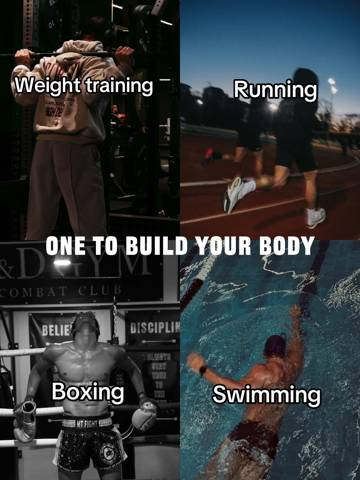
2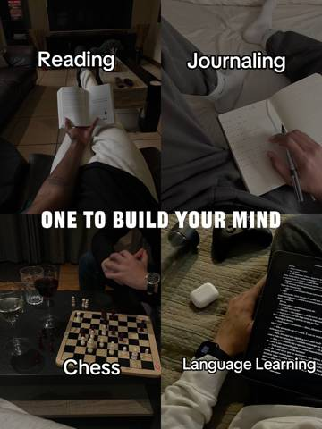
3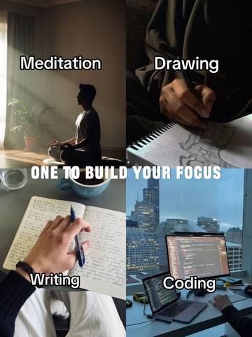
4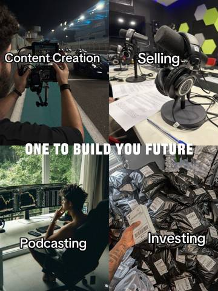
5#lifestyle #mentality #glowup #selfimprovement #fyp
@zam_my1992 · 168 likes — Easier said than done
@js2loyal · 38 likes — Calisthenics,reading,music,trading🙌🏽💙
@eliazgazz · 21 likes — Switch podcasting and selling
 1
1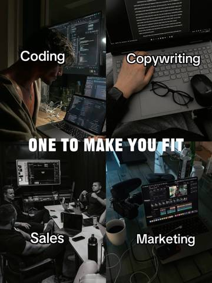
2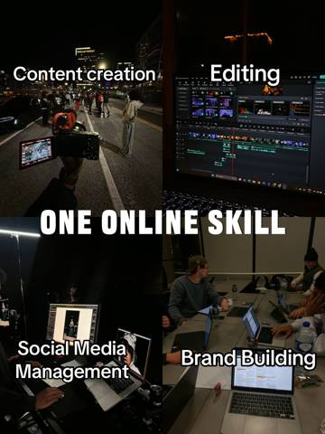
3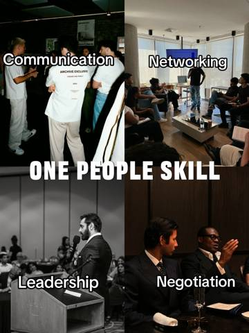
4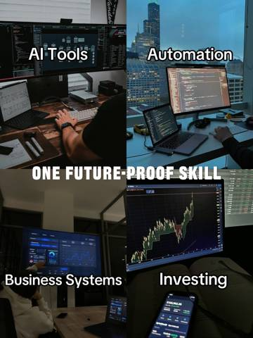
5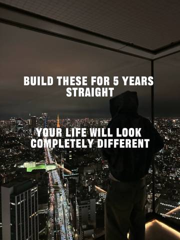
6Edit: 2nd slide caption should be “One High Income Skill” 👍🏽🌟 #Lifestyle #mentality #GlowUp #SelfImprovement #fyp
@mely31016 · 301 likes — Seriously, if you haven’t read The Hidden Life Code by Mason Beckerman yet, what are you even doing? It’s a total game changer.
@primediner123 · 62 likes — The problem is how to start☺️
@mr.gntle · 9 likes — I need a partner for YouTube automation. I’ve already started. I just want someone who shares the same goals and mindset, so we can stay motivated and grow together.
 1
1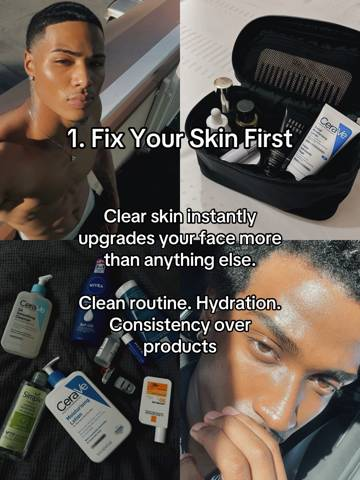
2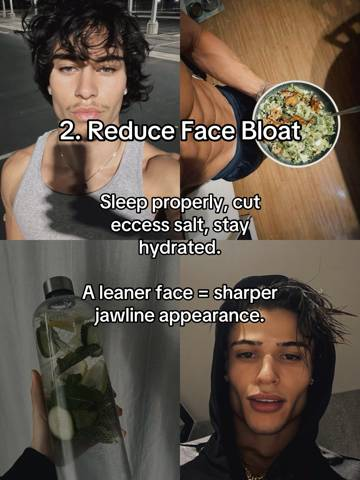
3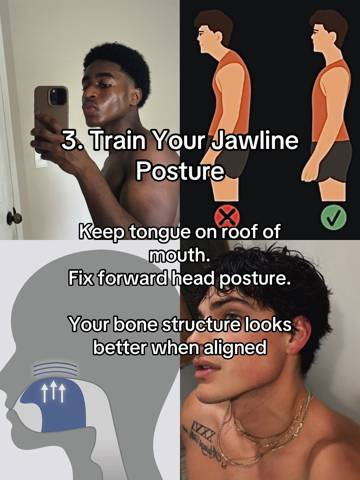
4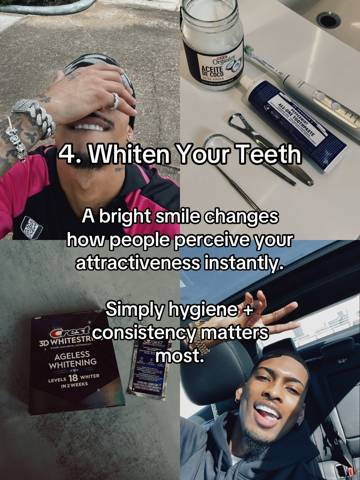
5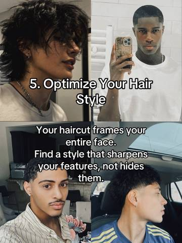
6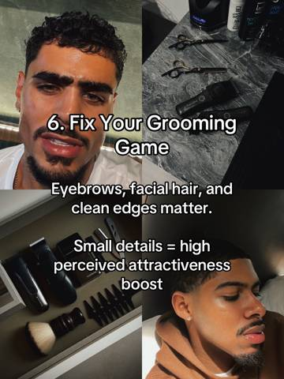
7#selfimprovement #glowup #glowuptips #menslifestyle #fyp
@jhont.gullit · 13 likes — I have dreads for 3 Years and I have been thinking about cutting them off for these Finger Curly Hair should I do it or no?
@yazzi_133 · 1 likes — How can I glow up
@richiano.g · 1 likes — Which face products
 1
1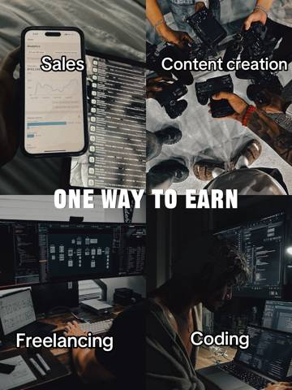
2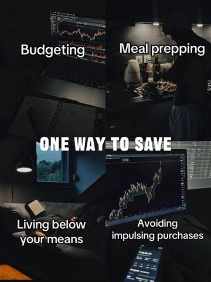
3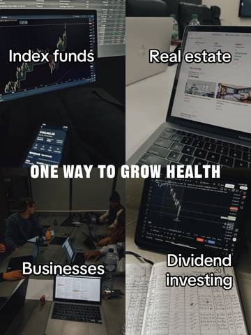
4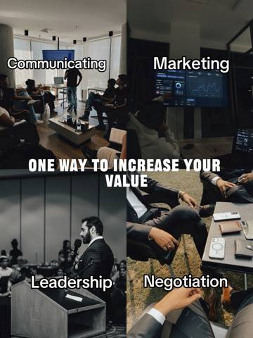
5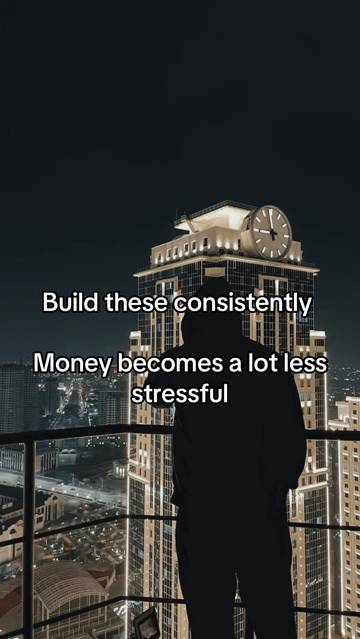
64th slide caption typo “One way to grow wealth” #Lifestyle #SelfImprovement #GlowUp #financialfreedom #fyp
@ceboekhouder · 21 likes — When you stick to the plan, things will work out 🔥
@mss101002 · 17 likes — I'd like to learn coding,but I haven't met a anyone who does it in person yet.
@reinhardf3 · 7 likes — I used to skip past dropshipping videos assuming the market was oversaturated until I finally launched my own Shopify store. Last week it achieved over 10k in sales.
 1
1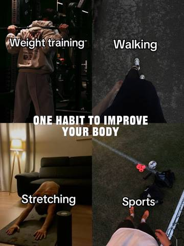
2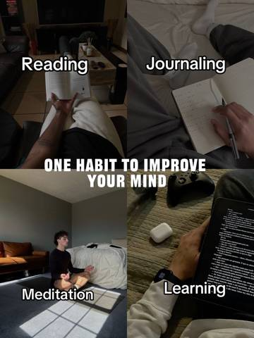
3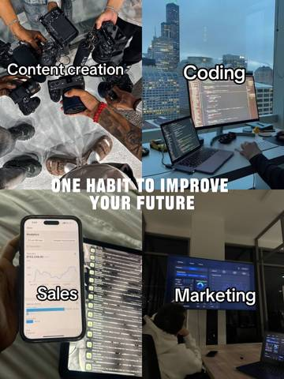
4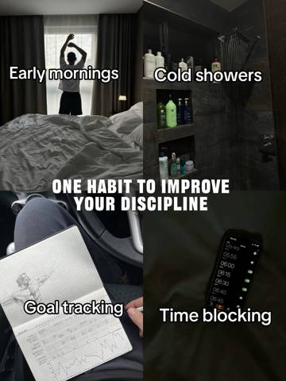
5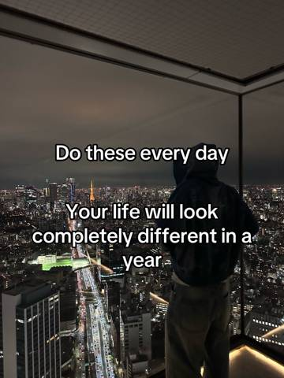
6#lifestyle #mentality #glowup #selfimprovement #fyp
@.ryftt · 14 likes — how do I get into sales or marketing without money?
@kobemawuse · 6 likes — call me back here to keep on track no matter the time
@trainwithmakai1 · 5 likes — Yup, gym my digital marketing business work right now walk early mornings
 1
1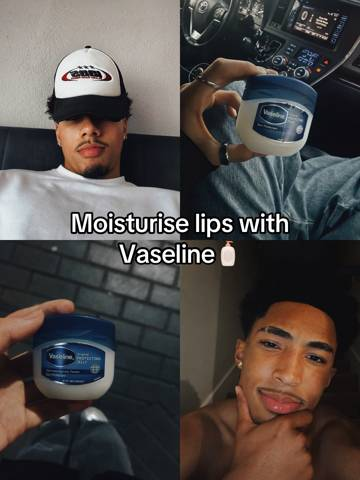
2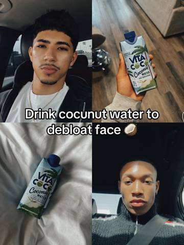
3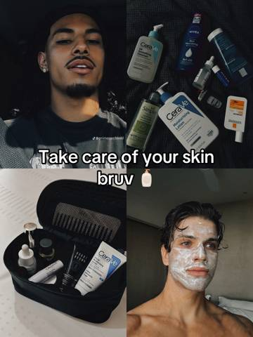
4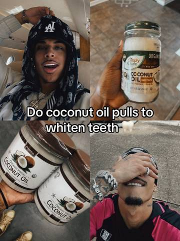
5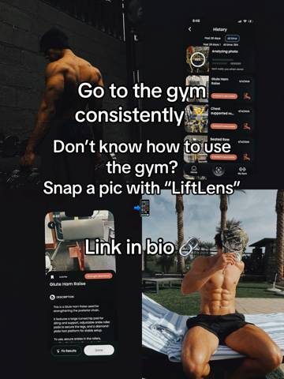
6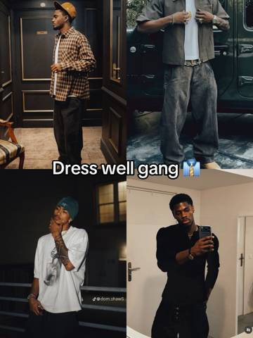
7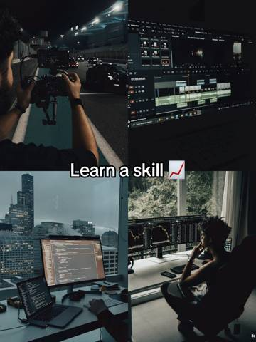
8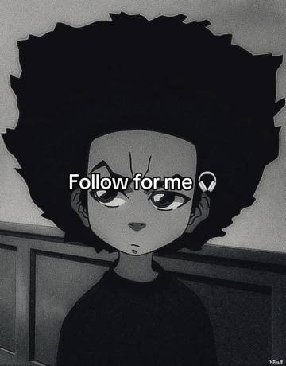
9Glow up tips 🌟 #glowup #selfimprovement #glowuptips #menglowup #fyp
@thapelo_70 · 6 likes — does the coconut water actually helps debloating your face
@ovi37937 · 3 likes — for coconut oil do I rub it on my teeth or I put it on my tooth brush? idk how to use i
@jbisland_ · 1 likes — Question so I don’t really have ways to the gym fr cause I’m not driving at the moment but I do have dumbbells at home could I do that and push ups?
 1
1 2
2 3
3 4
4 5
5 6
6Glow up hairstyles for your face shape #glowup #menshair #selfcare #fyp #men
@david_nic9 · 102 likes — Good or nah ?
@ezzz_744 · 58 likes — lecleeeeer
@kim4bayer · 19 likes — bro am pretty sure that you're 15 or 16
 1
1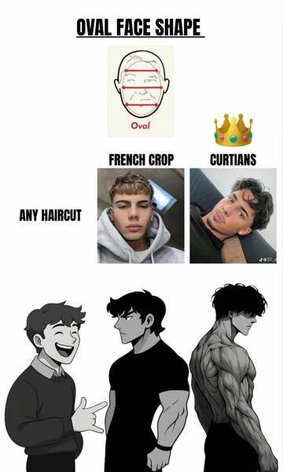
2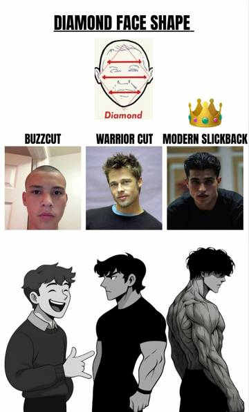
3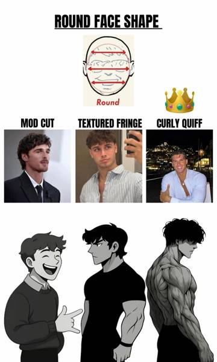
4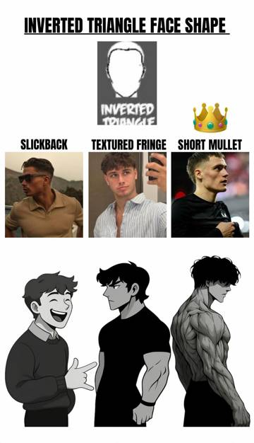
52026 men’s haircuts #glowup #menshair #fyp #selfcare #men
@micah.gritterr · 2961 likes — not about the hair btw
@julian_zh34 · 215 likes — Best hair
@a113cars · 92 likes — Warrior cut goated
 1
1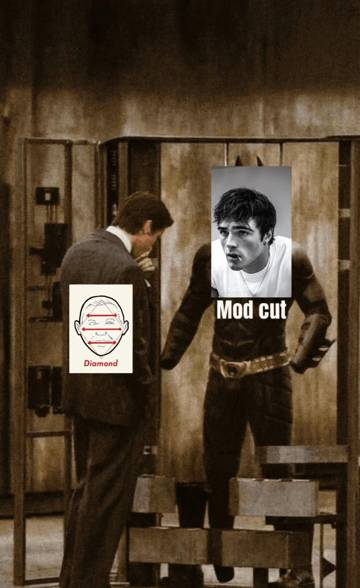
2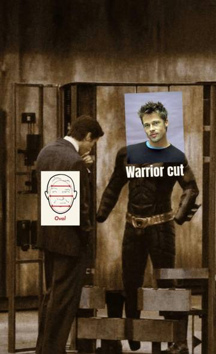
3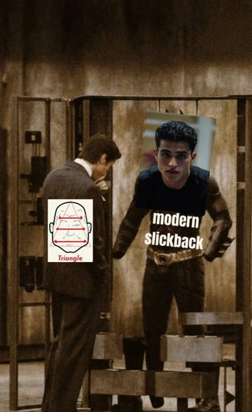
4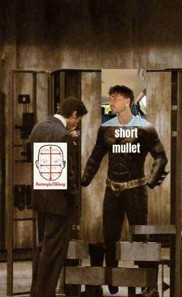
5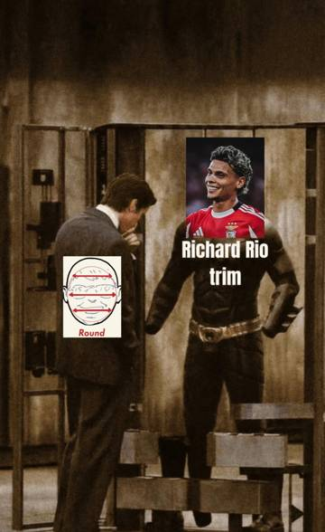
6Glow up haircuts #glowup #menshair #fyp #selfcare #men
@dachixvintelan · 1188 likes — why did the image fit so perfectly🥀😭😭😭
@privvv444___ · 262 likes — Diamond or an Oval? 🤷🏻♂️
@teoskyul · 142 likes — Got a warrior cut on oval face, im turning heads ❤️🩹
 1
1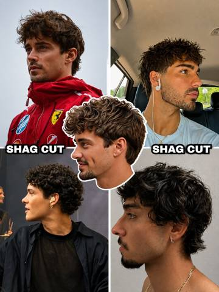
2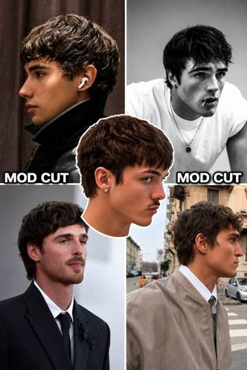
3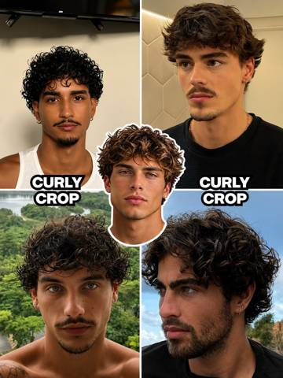
4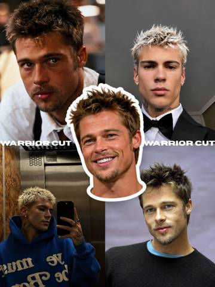
5 6
6Find the haircut that suits you 🫵 #menshair #hairstyle #modcut #haircut #selfimprovement
@nathannnnnnnnn10 · 69 likes — Gang what do I go for ?
@09freezy · 29 likes — tbh I can't find the difference between shag cut and mod cut
@ohhparideee · 14 likes — ceasar cut ❌ ceasar salade✅
 1
1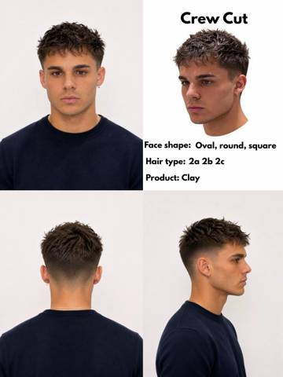
2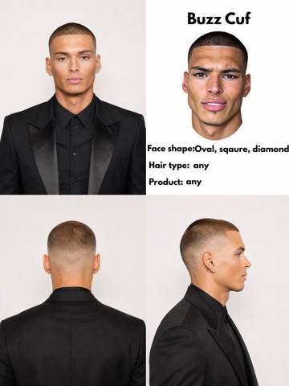
3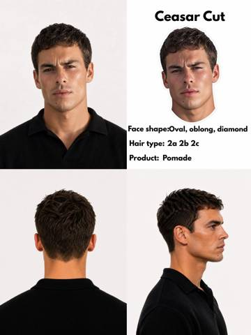
4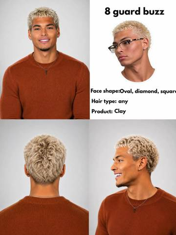
52026 glow up haircuts for short hair… #menshair #shorthair #glowup #hairinspo #hairstyle
@dominiclabossiere · 756 likes — It’s not about the haircut bro
@.tommy.tiktok · 82 likes — warrior>>
@shauryalemans · 82 likes — hot take warrior cut only looks good if you have facial hair
 1
1 6
62026 haircuts that suits your face… #glowup #menshair #hairstyle #hairinspo #turkish
@edba_1 · 1724 likes — When you’ll realise it’s not abt the hair gng
@mahmoud9999999990 · 107 likes — Marlon dosent have a diamond face shape bro
@e1235566 · 8 likes — Real hair style
 1
12026 haircuts for the summer >>> #men #hairstyles #menshair #glowup #summerhair
@ovalleoemege_do · 800 likes — Is not about the hair cut
@drewskionice__ · 27 likes — I’m black
@emlynwynne11 · 21 likes — Me
 1
1Find your next hairstyle #menshair #hairstyle #glowup #haircuts #turkish
@g7n_polarfn · 113 likes — pls help. which hairstyle will fit me
@malo540 · 16 likes — low taper is the move 👌🏽
@demirr2620 · 11 likes — Why is my mann there?
 1
1 2
2 3
3 4
4 5
5 6
6 7
7 8
8Wanna Glow Up? Follow these steps!! part 24 #glowup #men #clean #daily #fyp
@designerinterior5 · 38 likes — 3 years in daghestan brother
@g8801121 · 25 likes — Clean Boys RISE
@jonn_daviid · 5 likes — Fv
Wanna Glow Up? Follow these step!! part 33 #glowup #cleantok #men #daily #fyp
@chkbccvj · 67 likes — holy song
@maxbehrens67 · 13 likes — sparkling water? is that true?
@d._0575_ · 10 likes — I am 75kg and i drink 4.5-5L water everyday
101/365 days, Manage your interests, will change your life 💯🔥 #skills #knowledge #dailylife #trending #fyp
@samsmith99904 · 30 likes — Tik tok I’m very very interested ❤️🔥😍
@mark.rufo13 · 6 likes — This is noted!
@inner.noor__ · 5 likes — Gonna comment on this to stay on this side of TikTok
162/365 days, College degree?? #skills #usa #trending #millionaire #viral
160/365 days #money #people #blowthisup #trending #foryoupage
Wanna Glow Up? Follow these step!! part 172 #glowup #fyp #viral #daily #men
@xinan000 · 0 likes — 🔥🔥🔥
@wallpaper.hd075 · 0 likes — 🔥🔥🔥
Wanna Glow Up? Follow these step!! part 174 #glowup #man #daily #fyp #viral
@zadecalix · 1 likes — me after fixing these all
@subbag1g1n8 · 1 likes — how about facial harmony
@its.adu · 0 likes — I have big nose 🥹🥀
Wanna Glow Up? Follow these step!! part 175 #lookmaxing #GlowUp #viral #fyp #daily
@glowuplads · 0 likes — 😳😳😳
 1
1 2
2 3
3 4
4 5
5 6
6#selfcare #lookism #SelfCare #glowuptips #selfimprovement
@barbie46121 · 1 likes — ❤️❤️❤️
@northside.zay · 0 likes — bruh
@lilvo44 · 0 likes — 🥰
#selfcare #lookism #SelfCare #glowuptips #selfimprovement
@anthony_i07 · 0 likes — what about night creams 🤷♂️
#selfimprovement #glowuptips #SelfCare #lookism #selfcare
@n.m.moda.masculina · 0 likes — show
#lookism #selfcare #clearman
@zeniths_vision · 0 likes — Great video bro
@eren.com40 · 0 likes — you forget be grateful,pray, protect and love your family, be humble etc
@kennedyagbekoh · 0 likes — 1. Be God fearing and pray. 2. Love your family
#selfimprovement #lookism
@macro_organism · 0 likes — 🔥🔥🔥
#selfimprovement #lookism
@speeddredo · 0 likes — nice physique
#lookism #glowup #selfimprovement
#glowuptips #selfimprovement #SelfCare #lookism #man
@manchester_546 · 0 likes — ❤️❤️❤️
#viralitybased #hair #haircareroutine #hairstyling #damagedhairrepair
@brxdley87 · 28 likes — Everytime I shower some hair falls off
@culiscuultwo2509 · 9 likes — Conditioner lowk fucks up my hair
@worldpeacebabe · 9 likes — How much is based paying you dawg
#viralitybased #shampo #fyp #hair #mens
@wackojax17 · 4 likes — Based glazer bro
@otoymarupok · 1 likes — Hello
@otoymarupok · 1 likes — hello
#viralitybased #glowup #shampoo #perfume #clothes
@otoymarupok · 1 likes — Hello po Paano po ba bawasan a g face fat
#viralitybased #glowup #hair #height #face
#viralitybased #debloatingtips #losefacefat #glowuptips #jawline
#viralitybased #glowup #fyp #relateable #men
#viralitybased #starboy #men #mindset #aesthetic
How to use one: open the source post and look at every slide. Read the brief. Build the DOUXDS version slide for slide — same structure, our problem, our product, our CTA. Post it, tag @douxds, submit on Whop.
1. THE OBJECTIVE RECORD
Frame Spec
#5A5A5A, blue #0044FF, green #88CC00). Type palette: White #FFFFFF with black #000000 stroke.Sequence Record (Per Slide)
[18-24], grey hoodie. Setting: Parking garage. Words: "Things I did to get a sharper jaw line". Role: Hook/Promise.[18-24], black jacket. Setting: Mall/corridor. Words: none. Role: Visual Proof.Subject & Setting Profile (Anchor: Slide 1/2)
[18-24], dark curly hair (fade on sides), tan skin, clear texture, slight facial hair. Expression: neutral/serious. Gaze: off-camera right (S1), down toward lens (S2).Camera-and-light spec (Anchor: Slide 1)
CU.chest height, low-angle.three-quarter-front, face fully visible.wide-close, moderate depth of field.overhead-fluorescent, mixed.natural-mobile, lifted blacks.clean-digital.center-weighted.native-selfie.Zone Table (Global Text Overlay)
| Zone | Position | Visual Content | Text (verbatim) | Type & Treatment |
|---|---|---|---|---|
| Zone A — Native Text Overlay | ~50-65% from top, 10-90% width, centered | None | [Varies per slide, see Sequence Record] | Sans-serif (TikTok Sans (inferred)), normal width, bold, sentence case, ~4% frame height, #FFFFFF with heavy #000000 stroke/shadow. |
The Layout System
2. THE FRAME MECHANICS
The reading path
Viewer understands the visual context instantly, then reads the specific directive.
The scroll-stop mechanism Aspirational face/jawline (Slide 1). Mechanism: Face and eye contact (implied) + high-contrast native text promising a specific, highly desired physical transformation. Second strongest: The "before/after" implication of Slide 2.
Functional zones
Copy beats Line: "Things I did to get a sharper jaw line" Device: The Personal Blueprint. Why it lands: Targets insecure young men seeking physical improvement; implies a proven, accessible system rather than genetics. Trigger words: "Things I did", "sharper jaw line".
Hierarchy and weight 80% image, 20% text. Single type size. High contrast (white text/black stroke) ensures legibility over any background. Text survives at 25% scale.
3. THE PSYCHOLOGY
4. THE INDEX
Definitions index
Element registry
 2
2 4
4 5
5Slide 1 (Cover)
[18-25], varying hair/skin, neutral expressions.Slide 2
[18-25].Slide 3
[18-25].Slide 4
[18-25].Slide 5
[18-25].Slide 6
[18-25].The Whole: A rigid, repetitive visual encyclopedia categorizing male grooming standards via a recognizable internet meme format (the tier list).
Frame Spec
#141414#FFFFFF, Black #000000#E64A45, Orange #D98C3A, Yellow #E8D368, Green #C8F07B[UNCLEAR: generation]. Images appear to be sourced internet photography; varying resolutions and lighting setups suggest curation rather than generation, but AI upscaling or generation cannot be definitively ruled out.Subject & Setting Profile
[18-25]. Hair varies per slide. Skin tones range from fair to tan. Expressions are uniformly neutral, stoic, or "mewing" (jawline flexed). Gaze directions vary (lens, mirror, off-camera).CU to MCU.eye height, level angle.frontal / three-quarter-front / profile. face fully visible or face partly visible (profile shots show one eye/cheek).natural to portrait-compressed. moderate depth of field.mixed. Varies per insert.mixed. Varies per insert.clean-digital (overall composite).center-framed (within individual grid cells).Zone Table (Based on Slide 1 archetype)
| Zone | Position | Visual Content | Text (verbatim) | Type & Treatment |
|---|---|---|---|---|
| Zone A — Header Diagram | 0-14% top, 25-41% left | White square, red/black face shape diagram | none | none |
| Zone B — Header Title | 0-14% top, 41-100% left | Black background | Square | Geometric sans (inferred) Montserrat, normal, black/heavy, Title Case, ~6% height, White, centered vertically |
| Zone C — Tier 1 Block | 14-35% top, 0-33% left | Red #E64A45 fill, black female silhouette icon | none | none |
| Zone D — Tier 1 Image | 14-35% top, 33-61% left | Photo of man in suit | none | none |
| Zone E — Tier 1 Label | 14-35% top, 61-100% left | Black background | Buzzcut | Geometric sans, normal, bold, Title Case, ~4.5% height, White, centered |
| Zone F — Tier 2 Block | 35-57% top, 0-33% left | Orange #D98C3A fill | Great | Geometric sans, normal, black/heavy, Title Case, ~4% height, Black, centered |
| Zone G — Tier 2 Image | 35-57% top, 33-61% left | Photo of blonde man in tuxedo | none | none |
| Zone H — Tier 2 Label | 35-57% top, 61-100% left | Black background | Warrior cut | Geometric sans, normal, bold, Title Case, ~4.5% height, White, centered |
| Zone I — Tier 3 Block | 57-78% top, 0-33% left | Yellow #E8D368 fill | Mid | Geometric sans, normal, black/heavy, Title Case, ~4% height, Black, centered |
| Zone J — Tier 3 Image | 57-78% top, 33-61% left | Photo of man taking mirror selfie | none | none |
| Zone K — Tier 3 Label | 57-78% top, 61-100% left | Black background | Curtains | Geometric sans, normal, bold, Title Case, ~4.5% height, White, centered |
| Zone L — Tier 4 Block | 78-100% top, 0-33% left | Green #C8F07B fill | Trash | Geometric sans, normal, black/heavy, Title Case, ~4% height, Black, centered |
| Zone M — Tier 4 Image | 78-100% top, 33-61% left | Photo of man on runway | none | none |
| Zone N — Tier 4 Label | 78-100% top, 61-100% left | Black background | French crop | Geometric sans, normal, bold, Title Case, ~4.5% height, White, centered |
The Layout System
The reading path
The scroll-stop mechanism The tier list grid format (pattern interrupt). It is a highly recognizable internet schema that promises immediate, categorized, and judgmental information without requiring deep reading. Second strongest: Zone C (the red block with the silhouette), which gamifies the concept of attractiveness.
Functional zones
Breaks if cut: Viewer doesn't know if the advice applies to them.Breaks if cut: No positive motivation or ideal to strive for.Breaks if cut: Removes the negative polarization that drives engagement.Copy beats
Hierarchy and weight
Belief shift: Viewer believes the author is a peer/authority in this specific subculture.Belief shift: Viewer believes their current haircut might be lowering their social status.Belief shift: Viewer believes attractiveness is a formula they can optimize.Definitions index
Element registry
 1
1 2
2 3
3 6
6SEQUENCE OVERVIEW
FRAME SPEC
#FFFFFF (White).#000000 (Black), #FFD700 (Gold sparkle emoji).[UNCLEAR: generation]. Mix of authentic photography and likely AI generation. Evidence of AI: Slide 3 bottom-left hand holding Vaseline has anomalous thumb structure; Slide 4 bottom-left phone screen features [ARTIFACT: blurry/gibberish text below the time].SUBJECT & SETTING PROFILE (PER SLIDE)
[20-25] for all subjects.CU to MS.eye level, level angle.frontal or three-quarter-front, face fully visible.natural to portrait-compressed, moderate depth of field.soft natural window light or ring light.clean-digital, lifted blacks.clean-digital.center-framed within each grid quadrant.ZONE TABLE
| Zone | Position | Visual Content | Text (verbatim) | Type & Treatment |
|---|---|---|---|---|
| Zone A — Top-Left | 0-50% H, 0-50% W | Image quadrant | none | N/A |
| Zone B — Top-Right | 0-50% H, 50-100% W | Image quadrant | none | N/A |
| Zone C — Bottom-Left | 50-100% H, 0-50% W | Image quadrant | none | N/A |
| Zone D — Bottom-Right | 50-100% H, 50-100% W | Image quadrant | none | N/A |
| Zone E — Center Text (S1) | 46-54% H, 15-85% W | none | GLOW UP TIPS FOR MEN ✨ | Compressed grotesque (Impact (inferred)), bold, uppercase, ~6% H, #FFFFFF, tight tracking, heavy #000000 drop shadow/stroke. |
| Zone E — Center Text (S2) | 46-54% H, 25-75% W | none | USE DEODORANT | Same as above. |
| Zone E — Center Text (S3) | 46-54% H, 10-90% W | none | APPLY VASELINE ON YOUR LIPS | Same as above. |
| Zone E — Center Text (S4) | 46-54% H, 30-70% W | none | SLEEP ENOUGH | Same as above. |
| Zone E — Center Text (S5) | 46-54% H, 15-85% W | none | CLEAN UP YOUR EYEBROWS | Same as above. |
| Zone E — Center Text (S6) | 46-54% H, 20-80% W | none | WEAR CLEAN CLOTHES | Same as above. |
THE LAYOUT SYSTEM
The reading path:
Viewer understands the directive immediately at stop 1.
The scroll-stop mechanism: High-contrast type mass (Zone E) interrupting a dense image grid. Second strongest: Direct eye contact from conventionally attractive subjects in Zone A/C.
Functional zones:
Copy beats:
Hierarchy and weight: 90% imagery, 10% type. Contrast is highest at the dead center. The ad protects the text overlay; faces are allowed to be cropped by the grid lines, but text is never obscured. Text survives at 25% scale.
Definitions index:
Element registry:
#FFFFFF text with heavy #000000 shadow, centered at 50% H / 50% W, spanning Zones A-D. 2
2 3
3 6
6PER-SLIDE SEQUENCE RECORD
Frame Spec
#FFFFFF (White).#000000 (Black text stroke).[UNCLEAR: generation]. Imagery appears to be scraped influencer photos and stock product shots. App UI is digital composite.Subject & Setting Profile
[18-25]. Clear skin, styled hair (dreads, curls, braids). Expressions vary (smiles, neutral smolders). Gaze: mostly direct to camera.CU to MS.eye / level.frontal / face fully visible.wide-close (smartphone camera).mixed (natural window light, overhead gym fluorescents).lifted blacks / high contrast.clean-digital.center-punched (within each grid quadrant).Zone Table (Mapped to Slide 4 - The Ad Payload)
| Zone | Position | Visual Content | Text (verbatim) | Type & Treatment |
|---|---|---|---|---|
| Zone A — Image Grid | 0-100% H, 0-100% W | 2x2 grid. TL: shirtless back. TR: App UI. BL: App UI. BR: shirtless selfie. | none | none |
| Zone B — Center Text | 45-65% H, 5-95% W | none | Train your body bro / Don't know how to use / the gym? / Snap a pic with "LiftLens" | Grotesque sans-serif (Helvetica class), normal, bold, sentence case, ~4% H, #FFFFFF, heavy black stroke outline, center aligned. |
The Layout System
The reading path
Understanding after stop 1: The viewer knows the specific tip or instruction for this slide. Understanding after stop 2: The viewer associates the tip with the aspirational imagery.
The scroll-stop mechanism Zone B (Center Text). Mechanism: High-contrast meme-style text format. It mimics organic, user-generated "moodboard" or "advice" content native to TikTok/Instagram, bypassing ad filters.
Functional Zones
Breaks if cut: The ad is immediately recognized as promotional and skipped.Copy beats (Slide 4)
Hierarchy and weight
[18-25] to deliver advice. Belief shift: Viewer believes following these tips will result in similar attractiveness/status.Belief shift: Viewer categorizes the app as a helpful organic tip rather than a commercial product.Definitions index
Element registry
#000000 outline applied to #FFFFFF text. Zone B. Ensures universal legibility over varied photo backgrounds. 1
1 2
2 3
3 4
4 5
5 6
61. THE OBJECTIVE RECORD
Frame Spec
Subject & Setting Profile (Carousel Aggregate)
frontal, face fully visible, direct gaze.MCU to CU (mostly hands/torsos).chest to overhead, mostly high-angle.face not visible (Slides 1-5), face fully visible (Slide 7).natural, moderate depth.mixed, soft, crushed blacks.crushed blacks, desaturated, cool tones.clean-digital with added grain.Zone Table
| Zone | Position | Visual Content | Text (verbatim) | Type & Treatment |
|---|---|---|---|---|
| Zone A — Hook Text (Slide 1) | 45-55% top, 10-90% width, center | None | You just need / 4 hobbies | humanist sans (inferred: Helvetica), normal, bold, Title Case, ~6% height, white, heavy black/blue drop shadow. |
| Zone B — Quadrant Labels (Slides 2-5) | Centered within each 50x50% quadrant | None | Running / Gym / Boxing / Basketball / Writing / Video making / Editing / Drawing / Reading / Language Learning / Researching / Trading / Content Creating / Selling / Podcasting / Coding | humanist sans (inferred: Helvetica), normal, bold, Title Case, ~4% height, white, heavy black stroke. |
| Zone C — Category Banners (Slides 2-5) | 47-53% top, 0-100% width, center | None | ONE TO MAKE YOU FIT / ONE TO MAKE YOU CREATIVE / ONE TO BUILD YOUR KNOWLEDGE / ONE TO MAKE YOU MONEY | condensed grotesque (inferred: Impact), compressed, bold, UPPERCASE, ~5% height, white, black stroke/shadow. |
| Zone D — Wall Text (Slide 6) | 20-80% top, 10-90% width, left-aligned | Dark grey wall | SUCCESS / IS A / DECISION. | humanist sans (inferred: Helvetica), normal, bold, UPPERCASE, black 3D text integrated into environment. |
| Zone E — CTA Text (Slide 7) | 45-55% top, 10-90% width, center | None | Follow for more | humanist sans (inferred: Helvetica), normal, bold, Title Case, ~5% height, white, black stroke. |
The Layout System
2. THE FRAME MECHANICS
The reading path
Viewer understands after stop 1: The core premise/category. After stop 2: The first visual example of that category.
The scroll-stop mechanism The 4-way split screen (pattern interrupt). It breaks standard single-image feed norms, forcing the eye to process multiple data points. Second strongest: High-contrast, heavily shadowed center text (Zone A).
Functional zones
Breaks if cut: No context for the following slides; carousel loses its narrative spine.Breaks if cut: Fails to deliver the promised "4 hobbies".Breaks if cut: Lacks philosophical weight; remains just a list.Breaks if cut: No conversion mechanism.Copy beats
Hierarchy and weight Imagery occupies 100% of the frame, but text dominates attention via extreme contrast (white text, heavy black stroke). Type sizes are limited to 3 distinct scales. The ad protects the center text at all costs; quadrant labels become illegible at thumbnail size, but the center banners (Zone C) survive at 25% scale.
3. THE PSYCHOLOGY
Belief shift: Success is structured and achievable through specific habits.Belief shift: I can be the person in these images.Belief shift: This account aligns with my counter-culture/intellectual identity.4. THE INDEX
Definitions index
Element registry
 1
1 2
2 4
4Slide 1 (Cover)
clean boy / tricksSlide 2
ice water / ice bowl / Cold water reduces puffiness fast and sharpens your jawline. Boosts circulation and gives your skin a clean, awake look in seconds.Slide 3
tea (green + ginger) / Reduces bloating, clears skin from the inside, and helps control appetite. A perfect daily drink for a clean, lean look.Slide 4
BROW SHAPING made super simple / REMOVE STRAY HAIRS / DON'T TOUCH THE MIDDLE! / REMOVE 1 ROW / CHOOSE YOUR BROW ADVENTURE / Remove 1 row for natural, feathery brows. / Remove 2-3 for glam, structured brows. / eyebrow grooming / Clean, shaped brows instantly make your face look sharper. Trim long hairs and brush them up for a natural, lifted look.Slide 5
vaseline / A thin layer at night keeps lips smooth and hydrated. Gives a clean, healthy look without effort.Slide 6
sea salt spray / Adds natural texture and volume for that effortless “clean boy” hair. Scrunch into damp hair and let it air-dry.Slide 7
SPF / SPF keeps your skin clean, even-toned, and protected every single day. Prevents dark spots, texture, and premature aging the real cheat code for smooth skin.Slide 8 (Closer)
The skincare pyramid: / Monthly / Facials, Peels / Weekly / Washing pillowcases & makeup brushes / Face mask / Exfoliate / Daily / Cleanser / Toner / Eyecream / Serum / Sunscreen / MoisturizerFrame Spec
#F5F5F5, Grays #8A8A8A, Warm shadows #2D2520). Slide 8 uses Purples (#F3E8FF, #D8B4E2, #A875C4, #7E4B9E).#FFFFFF.[UNCLEAR: generation]. Photos show authentic textures (pores, hair strands, fabric weaves), but are highly curated.Subject & Setting Profile
CU to MCU.eye, level.frontal or profile, face fully visible or face partly visible (cropped at jaw/eyes).natural to portrait-compressed, moderate depth of field.soft window light, directional, high contrast.crushed blacks, desaturated warm tones.clean-digital with slight added grain.Zone Table (Based on dominant Slides 2-7 template)
| Zone | Position | Visual Content | Text (verbatim) | Type & Treatment |
|---|---|---|---|---|
| Zone A | 0-50% H, 0-50% W | Product/Method photo | none | none |
| Zone B | 0-50% H, 50-100% W | Product/Method photo | none | none |
| Zone C | 50-100% H, 0-50% W | Result/Face photo | none | none |
| Zone D | 50-100% H, 50-100% W | Result/Face photo | none | none |
| Zone E | ~45-52% H, 10-90% W, center | Heavy black drop shadow | [Trick Title] | Extended Grotesque (inferred: Arial Black), heavy, lowercase, ~5% H, white, tight tracking. |
| Zone F | ~52-65% H, 15-85% W, center | Heavy black drop shadow | [Benefit Copy] | High-contrast serif (inferred: Georgia), italic, normal width, ~2.5% H, white, normal tracking. |
The Layout System
The Reading Path
Understanding after stop 1: The topic of the slide. Understanding after stop 2: The desired aesthetic result of the topic.
The Scroll-Stop Mechanism Zone E (Title). Mechanism: High-contrast type mass interrupting a symmetrical 4-grid photo layout. The bold, lowercase white text with heavy shadow acts as a stark pattern interrupt against the moody photography.
Functional Zones
Copy Beats (Example from Slide 2)
"Cold water reduces puffiness fast and sharpens your jawline."Hierarchy and Weight
Definitions Index
Element Registry
Picked on one test: could a clipper with a phone, or Higgsfield, make this for DOUXDS? Each one names the format it carries. The full sweep lives on My Feeds under Clipper Videos.


How to use one: watch the source post twice. Read the brief — it carries the hook, the scenes, what is said and what is shown. Film it or build it in Higgsfield. Post it, tag @douxds, submit on Whop.
Sound form: MUSIC ONLY. Hip-hop track with rhythmic beats and melodic vocal samples. No spoken dialogue.
Character & Setting Profile
1. THE OBJECTIVE RECORD
| Timestamp | Roll | Visuals | On-Screen Text | Transcript | Sound |
|---|---|---|---|---|---|
| 0:00 - 0:07 | A | Subject leans into camera, ruffles dry hair, then wets it under a shower head (inferred). | none | [Rhythmic hip-hop music] | music: Mid-tempo beat |
| 0:08 - 0:12 | B-over | [shows: product bottle] Subject holds BASED Leave-In Conditioner to camera, pumps white cream into palm. | none | [Music continues] | music: Beat holds |
| 0:13 - 0:16 | A | Subject rubs hands together and vigorously applies conditioner to wet curls. | none | [Music continues] | music: Beat holds |
| 0:17 - 0:19 | B-over | [shows: blow drying] Subject uses hair dryer with diffuser on wet hair, tilting head. | none | [Music continues] | music: Beat holds |
| 0:20 - 0:24 | B-over | [shows: styling clay] Subject shows BASED Clay jar, scoops small amount with finger. | none | [Music continues] | music: Beat holds |
| 0:25 - 0:30 | A | Subject applies clay, shakes curls, turns to show back of head, then poses for final look. | none | [Music continues] | music: Beat swells |
2. THE SCENE MECHANICS
Visual Transformation Hook (0:00 - 0:07)
Duration: 0:00-0:07 · Event: Subject ruffles hair, wets it · Emotion: High energy · Outcome: Viewer curious about the process · Camera: Close-up, handheld feel · Staging: Center frame · Delta: Hair goes from dry/frizzy to wet/flat · Boundary: No product shown yet.Product Solution (0:08 - 0:16)
Duration: 0:08-0:16 · Event: Product reveal and application · Emotion: Focused · Outcome: Understanding of product usage · Camera: Macro on product, then mid-shot · Staging: Product held to lens · Delta: Product moves from bottle to hair · Boundary: No final result yet.The Reveal & Validation (0:17 - 0:30)
Duration: 0:17-0:30 · Event: Drying, clay application, 360 turn · Emotion: Confident · Outcome: Desire to replicate the look · Camera: Mid-shot, rotating · Staging: Subject turns back to camera · Delta: Hair goes from wet to styled curls · Boundary: Process is complete.Pacing and rhythm: Fast-paced cuts (2-4 seconds) matching the beat of the music to maintain high energy.
3. THE PSYCHOLOGY
4. THE VOICE FINGERPRINT
5. THE INDEX
Definitions index
Element registry
Roll sheet

Sound form: RAPPED. Russian lyrics ("Обнял, поцеловал" by Xcho). Structure: Verse-Chorus. One male vocal, melodic rap style.
Character & Setting Profile
1. THE OBJECTIVE RECORD
| Timestamp | Roll | Visuals | On-Screen Text | Transcript | Sound |
|---|---|---|---|---|---|
| 0:00 - 0:01 | B-silent | [shows: product, low angle] Close-up, matte bottle in dark studio. Gold rim lighting. | The product: | [Russian rap music] | music: "Обнял..." mid-tempo |
| 0:01 - 0:02 | B-silent | [shows: product label] Macro shot of "ADVANCED MOISTURE" text on bottle. | The product: | [music continues] | music: holding |
| 0:02 - 0:04 | B-silent | [shows: product & ingredients] Bottle centered with wood chunks falling around it. | The product: | [music continues] | music: holding |
| 0:04 - 0:05 | B-silent | [shows: product texture] Extreme close-up of pump head and bottle shoulder. | The product: | [music continues] | music: holding |
| 0:05 - 0:06 | B-silent | [shows: product label] Close-up of "BODY LOTION" text. | The product: | [music continues] | music: holding |
| 0:06 - 0:08 | B-silent | [shows: user, studio] Subject 1 in black jacket behind plastic sheet. High-res. | Average users: | [music continues] | music: beat drop |
| 0:08 - 0:10 | B-silent | [shows: user, beach] Subject 1 shirtless at beach, holding lotion. | Average users: | [music continues] | music: holding |
| 0:10 - 0:11 | B-silent | [shows: product kit] Navy bag with BASED products on sand. | Average users: | [music continues] | music: holding |
| 0:11 - 0:12 | B-silent | [shows: user, bathroom] Subject 1 in sunlight, looking in mirror. | Average users: | [music continues] | music: holding |
| 0:12 - 0:14 | B-silent | [shows: users, office] Subject 1 and 2 under neon sign. Subject 1 gestures. | Average users: | [music continues] | music: holding |
| 0:14 - 0:15 | B-silent | [shows: product in hand] Subject 1 holds bottle to camera. | Average users: | [music continues] | music: holding |
| 0:15 - 0:17 | B-silent | [shows: user, close-up] Subject 1 talking to camera (no audio). | Average users: | [music continues] | music: holding |
2. THE SCENE MECHANICS
Aesthetic Product Hook (0:00 - 0:06)
Duration: 0:00-0:06 · Event: Rapid cuts of product details · Emotion: Admiration · Outcome: Product perceived as high-quality · Camera: Macro, static and slow pans · Staging: Product centered · Delta: Dark to light details · Boundary: No humans shown.Identity Alignment Montage (0:06 - 0:17)
Duration: 0:06-0:17 · Event: Montage of attractive male using product · Emotion: Aspiration · Outcome: Viewer associates product with attractiveness · Camera: Eye-level, handheld/dynamic · Staging: Subject 1 in various lifestyle settings · Delta: Studio to outdoors to bathroom · Boundary: No technical specs.Script Beats
Pacing and Rhythm
3. THE PSYCHOLOGY
4. THE VOICE FINGERPRINT
5. THE INDEX
Definitions index
Element registry
Roll sheet

1. THE OBJECTIVE RECORD
Sound form: MUSIC ONLY. High-tempo Afrobeat/Pop track ("Jump" by Tyla, Gunna, Skillibeng) throughout.
Character & Setting Profile:
| Timestamp | Roll | Visuals | On-Screen Text | Transcript | Sound |
|---|---|---|---|---|---|
| 0:00 - 0:02 | B-silent | [shows: subject, close-up] Subject looks into camera, smoothing hair with hand. Night lighting. | "how do you keep your skin so clear?" | [Music: Upbeat, rhythmic Afrobeat] | music: "Jump" - Tyla |
| 0:02 - 0:04 | B-silent | [shows: product reveal] Subject holds up black spray bottle to the camera. | hypochlorous acid. | [Music continues] | music: "Jump" - Tyla |
| 0:04 - 0:06 | B-silent | [shows: subject, low angle] Subject looks down slightly, hair backlit by streetlights. | none | [Music continues] | music: "Jump" - Tyla |
| 0:06 - 0:08 | B-silent | [shows: subject, profile] Subject turns head, showing clear skin on cheek. | • prevents breakouts \ | • anti-inflammatory \ | • use after sweating |
| 0:08 - 0:11 | B-silent | [shows: subject, close-up] Subject smiles slightly, runs hand through hair. | enjoy clear skin | [Music continues] | music: "Jump" - Tyla |
2. THE SCENE MECHANICS
Phase: The Question Hook (0:00 - 0:02)
Phase: The Secret Ingredient (0:02 - 0:04)
Phase: Benefit Stacking (0:04 - 0:08)
Phase: The Result CTA (0:08 - 0:11)
Script Beats:
Pacing and Rhythm:
3. THE PSYCHOLOGY
4. THE VOICE FINGERPRINT
5. THE INDEX
Sound form: SPOKEN (100% of runtime).
Character & Setting Profile
| Timestamp | Roll | Visuals | On-Screen Text | Transcript | Sound |
|---|---|---|---|---|---|
| 0:00 - 0:01 | B-vo | [shows: skin texture, close-up] Finger pokes cheek with visible redness. | Before: | Creator: Watch me completely get rid of all this acne and dryness on my face... | music: Upbeat, mid-tempo synth |
| 0:01 - 0:02 | B-vo | [shows: peeling skin, extreme close-up] Peeling skin around mouth and chin. | Before: | Creator: ...without using 20 different products. | music: holding |
| 0:02 - 0:04 | A | [shows: clear skin result] Subject tilts head, showing clear jawline and glowing skin. | After: | Creator: I start by washing my face with this cleanser from Based... | music: holding |
| 0:04 - 0:05 | B-over | [shows: product overload] Subject holds a chaotic handful of various dropper bottles. | none | Creator: ...which gently removes all the build-up of dirt and dead skin... | music: holding |
| 0:05 - 0:07 | B-over | [shows: product hero shot] Close-up of black BASED Cleanser bottle. | Step 1: Cleanse With Based | Creator: ...without leaving my skin feeling stripped and dry. | music: holding |
| 0:07 - 0:08 | B-over | [shows: product texture] Grey gel cleanser dispensed into palm. | Step 1: Cleanse With Based | Creator: After rinsing that off, I apply the Based moisturizer... | music: holding |
| 0:08 - 0:10 | B-over | [shows: application] Subject rubs white foam onto face wearing headband. | Step 1: Cleanse With Based | Creator: ...which leaves my skin feeling hydrated and not tight and dry. | music: holding |
| 0:11 - 0:12 | B-over | [shows: product hero shot] Close-up of white BASED Moisturizer bottle. | Step 2: Apply Based Moisturizer | Creator: If you want to try them out for yourself... | music: holding |
| 0:12 - 0:13 | B-over | [shows: product texture] White cream dispensed into palm. | Step 2: Apply Based Moisturizer | Creator: ...they're running huge sales for them right now... | music: holding |
| 0:13 - 0:15 | B-over | [shows: application] Subject massages moisturizer into cheeks. | Step 2: Apply Based Moisturizer | Creator: ...on the TikTok Shop. | music: holding |
| 0:15 - 0:16 | A | [shows: final result] Subject looks into camera, clear skin. | none | [music continues] | music: holding |
| 0:16 - 0:19 | A | [shows: CTA] Subject holds both bottles, points down to shop link. | none | [music continues] | music: holding |
Phase: Visual Destruction & Negative Bait Hook (0:00 - 0:02)
Duration: 0:00-0:02 · Event: Poking dry skin · Emotion: Disgust/Relatability · Outcome: Attention captured · Camera: Extreme close-up · Staging: Subject's face only · Delta: Static to poking · Boundary: No solution shown yet.Phase: The Transformation Reveal (0:02 - 0:04)
Duration: 0:02-0:04 · Event: Head tilt reveal · Emotion: Aspiration · Outcome: Desire for clear skin · Camera: Medium close-up · Staging: Subject centered · Delta: Red/dry to clear/glowing · Boundary: No product details yet.Phase: The Magic Mechanism / Simple Routine (0:04 - 0:15)
Duration: 0:04-0:15 · Event: Cleansing and moisturizing · Emotion: Competence · Outcome: Understanding the routine · Camera: Alternating product shots and application · Staging: Bathroom/Bedroom · Delta: Dry face to moisturized face · Boundary: No price/link yet.Phase: Scarcity CTA (0:15 - 0:19)
Duration: 0:15-0:19 · Event: Pointing to link · Emotion: Urgency · Outcome: Click-through · Camera: Medium shot · Staging: Subject holding both products · Delta: Static pose to pointing · Boundary: No more routine info.Script Beats
Pacing and rhythm: Fast cuts (approx. 1-1.5s per shot) maintain high energy. The shift from "Before" to "After" happens in under 3 seconds to maximize retention.
Definitions index
Element registry
Roll sheet
Sound form: SPOKEN. One voice, continuous.
Character & Setting Profile
| Timestamp | Roll | Visuals | On-Screen Text | Transcript | Sound |
|---|---|---|---|---|---|
| 0:00 - 0:05 | A | Close-up, front-facing phone camera. Subject waves hand dismissively, looking directly at lens. | none | Creator: [direct] I'm sorry, but the only way that you're gonna lighten them dark spots is if you lighten them dark spots. | music: none \ |
| 0:05 - 0:14 | A | Same framing. Subject points index finger upward for emphasis, then points down. Ends with a slight nod. | none | Creator: Start bleaching them dark spots, okay, at night, and wear sunscreen in the daytime. You're welcome. | music: none \ |
Phase: The Blunt Reality Check (0:00 - 0:05)
Duration: 0:00-0:05 · Event: Subject dismisses viewer's current efforts. · Emotion: Confrontational but helpful. · Outcome: Viewer realizes they are overthinking. · Camera: Eye-level, static. · Staging: Seated, hand gestures. · Delta: Hand moves from wave to still. · Boundary: No product names mentioned.Phase: The Simplified Protocol (0:05 - 0:14)
Duration: 0:05-0:14 · Event: Subject gives two-step instructions. · Emotion: Confidence. · Outcome: Viewer has a clear plan. · Camera: Eye-level, static. · Staging: Seated, finger pointing. · Delta: Finger points up then down. · Boundary: No specific brands recommended.Script beats
Pacing and rhythm
Fingerprint: Circular logic, uses "them" as a demonstrative adjective, rhythmic "okay" fillers, signs off with a definitive verdict.
Definitions index
Element registry
Roll sheet
A man in a parked car refuses to give you a secret. He tells you the obvious thing instead — that the only way to clear the bumps is to clear the bumps — and then gives you two instructions, a device, and permission not to believe him. The whole asset runs on one unbroken take, no cuts, no music, no captions, and it works because nothing in it is trying to sell you.
Opening 1 · Control Film: Close-up on a front-facing phone camera, sat in a parked car. Grey headrests behind you, daylight coming through the windscreen. Your hand is already mid-wave as the frame starts — waving away everything the viewer has tried — and your eyes are locked down the lens. Nothing cuts, no music, nothing on screen. Say: "I'm sorry, but the only way that you're gonna clear them bumps is if you clear them bumps."
Opening 2 · The nightly do-or-don't Film: Close on a hand at a bathroom light switch, killing it — and in the half-second before the room goes dark, the neck in the mirror behind it. The frame ends on black. One motion, no words yet. Say: "I'm sorry, but the only guys clearing them bumps are the ones actually doing something at night."
Only if it's true for you. This one says you do something every night. If you don't, shoot the other five and leave this one out.
Opening 3 · The saved posts Film: A thumb scrolling a saved-posts grid, fast — method charts, arrow grids, checklists going past — then it stops dead on one. The phone screen fills the whole frame. A real phone, a real cluttered save folder. Say: "You saved four of these and your bumps are exactly where they were."
If you don't have this: use your own saved folder however it actually looks, and film that.
Opening 4 · The shelf Film: A bathroom shelf crowded with product — six, seven bottles, a razor, patches — and a hand sweeping every one of them to the side in one go, leaving bare shelf. You hear the objects knock together off-frame. Say: "Stop overcomplicating them bumps. It's one thing at night and one thing when you shave."
If you don't have this: use whatever is actually on your shelf, however many bottles that is, and sweep those.
Opening 5 · The mirror check Film: Shot from behind, out on the street. A young man slows as he passes a shop window, tilts his chin up and turns his head to catch the side of his neck in the reflection — then keeps walking like nothing happened. One continuous move, no cut. Say: "You've been checking your neck in every mirror you pass. I know."
Only if it's true for you. "I know" says you've done it yourself. If you haven't, skip this opening and shoot the other five.
Opening 6 · The photo you angle out of Film: Two friends line up for a photo. You step in and physically turn yourself so one side of your face is away from the lens, chin angled — a small, practiced adjustment nobody else notices. Shutter sound. The frame holds on you mid-turn. Say: "You stopped taking pictures from that side. That's not a camera problem."
If you don't have this: film it with whoever's around, or on your own with the phone propped up. Only if it's true for you — if you've never done this, shoot the other five.
Frame 1 · 0:00–0:05
Source: "Close-up, front-facing phone camera. Subject waves hand dismissively…"
Film: A plain shot. You are in the driver's seat of a parked car, phone held up in front of you at arm's length, framed close — head and shoulders, grey headrests behind you. Daylight through the windscreen, flat on your face. Your hand is already mid-wave as the shot begins, waving the viewer's effort away, and your eyes stay on the lens the whole time. Phone held in the hand, not propped.
Hear: your voice close on the phone mic, and the dull quiet of a car with the engine off. Nothing else.
Wearing: black cotton hoodie, hood down, sleeves at the wrist, no cap, small hoop earrings.
On screen: nothing
Say: "I'm sorry, but the only way that you're gonna clear them bumps is if you clear them bumps."
Frame 2 · 0:05–0:08
Source: "Same framing. Subject points index finger upward for emphasis…"
Film: A plain shot, same close framing in the parked car, grey headrests behind you, daylight through the windscreen. The waving hand comes up in front of your chest and ticks off three things on the fingers — one, two, three — fast and flat, like you're bored of listing them. Eyes stay on the lens.
Hear: your voice on the phone mic, the car quiet behind it.
Wearing: black cotton hoodie, hood down, sleeves at the wrist, no cap, small hoop earrings.
On screen: nothing
Say: "And I know what you tried. Five blade. Single blade. One of them rotary ones."
Frame 3 · 0:08–0:12
Source: "Same framing. Subject points index finger upward for emphasis, then points down."
Film: A plain shot, same close framing in the parked car, grey headrests behind you, daylight through the windscreen. The ticking hand drops flat, palm down, and holds dead still in the bottom of the frame. Nothing moves for the length of the line. Eyes stay on the lens.
Hear: your voice on the phone mic. The car is silent under it.
Wearing: black cotton hoodie, hood down, sleeves at the wrist, no cap, small hoop earrings.
On screen: nothing
Say: "None of them was ever gonna reach it. They cut the top. The hair's already under there."
Frame 4 · 0:12–0:16
Source: "Same framing. Subject points index finger upward for emphasis, then points down."
Film: A plain shot, same close framing in the parked car, grey headrests behind you, daylight through the windscreen. Nothing moves at all — hands out of frame, body still. You let the line sit. One small shake of the head on the last few words, and that is the only movement in the shot. Eyes on the lens throughout.
Hear: your voice on the phone mic, and the stillness of the car around it.
Wearing: black cotton hoodie, hood down, sleeves at the wrist, no cap, small hoop earrings.
On screen: nothing
Say: "Them bumps ain't your razor, okay. And they ain't your fault."
Frame 5 · 0:16–0:23
Source: "Same framing. Subject points index finger upward for emphasis, then points down. Ends with a slight nod."
Film: A plain shot, same close framing in the parked car, grey headrests behind you, daylight through the windscreen. The index finger comes up on the first instruction, held for a beat, then points down on the second. That is the source's own gesture and it does not change. Eyes on the lens.
Hear: your voice on the phone mic, the car quiet behind it.
Wearing: black cotton hoodie, hood down, sleeves at the wrist, no cap, small hoop earrings.
On screen: nothing
Say: "Start freeing them trapped hairs with the FLEX, okay, and fix your form when you shave."
Frame 6 · 0:23–0:28
Film: A plain shot, same close framing in the parked car, grey headrests behind you, daylight through the windscreen. A small shrug on the last few words — shoulders only. Your hands stay out of frame the whole time: nothing held up, nothing on the dashboard, no product in shot. Eyes on the lens.
Hear: your voice on the phone mic. Nothing else in the car.
Wearing: black cotton hoodie, hood down, sleeves at the wrist, no cap, small hoop earrings.
On screen: nothing
Say: "It's a little sonic brush. Goes deeper than your hands reach. That's the whole thing."
Frame 7 · 0:28–0:32
Film: A plain shot, same close framing in the parked car, grey headrests behind you, daylight through the windscreen. The shrug settles and you go still. A short nod partway through the line, conceding it. No hand movement at all — this one is carried in the face, not the gesture. Eyes on the lens.
Hear: your voice on the phone mic, the car silent under it.
Wearing: black cotton hoodie, hood down, sleeves at the wrist, no cap, small hoop earrings.
On screen: nothing
Say: "And yeah — you've bought something that said that before. So don't take my word for it."
Frame 8 · 0:32–0:37
Film: A plain shot, same close framing in the parked car, grey headrests behind you, daylight through the windscreen. You tilt your chin toward the side window, like the shop is out there somewhere, then come back to the lens for the second half of the line. Hands stay out of frame.
Hear: your voice on the phone mic, the car quiet behind it.
Wearing: black cotton hoodie, hood down, sleeves at the wrist, no cap, small hoop earrings.
On screen: nothing
Say: "My barber's seen ten thousand necks. He'll tell you the same — it's the curl and it's the angle."
Only if it's true for you. If you don't have a barber you'd actually quote, say the second half on its own — "It's the curl and it's the angle" — and leave the first half out.
Frame 9 · 0:37–0:39
Source: "Ends with a slight nod."
Film: A plain shot, same close framing in the parked car, grey headrests behind you, daylight through the windscreen. A slight nod and nothing else. You stop talking here — but do not stop recording. Eyes stay on the lens.
Hear: your voice on the phone mic for two words, then the car.
Wearing: black cotton hoodie, hood down, sleeves at the wrist, no cap, small hoop earrings.
On screen: nothing
Say: "You're welcome."
Frame 10 · 0:39–0:41
Film: A plain shot, same close framing in the parked car, grey headrests behind you, daylight through the windscreen. You hold. Eyes still on the lens, nothing moving, no talking. Two full seconds of it. This is not dead air — the pause is the beat, and it is what makes the sign-off land before anything else arrives.
Hear: nothing but the car.
Wearing: black cotton hoodie, hood down, sleeves at the wrist, no cap, small hoop earrings.
On screen: nothing
Say: nothing — picture only
Frame 11 · 0:41–0:46
Film: A plain shot, same close framing in the parked car, grey headrests behind you, daylight through the windscreen. You come back in quieter and flatter than everything before it, like you remembered one more thing. Same distance, no lean towards the lens, hands still out of frame — the device is never shown.
Hear: your voice on the phone mic, lower than it was. The car underneath.
Wearing: black cotton hoodie, hood down, sleeves at the wrist, no cap, small hoop earrings.
On screen: nothing
Say: "The stuff you keep rebuying, you keep rebuying. This you buy once. The FLEX, on the site, seventy bucks."
Frame 12 · 0:46–0:52
Film: A plain shot, same close framing in the parked car, grey headrests behind you, daylight through the windscreen. No change in energy from the frame before — same low, flat register, said the way you'd read someone the terms of a bet you're confident about. No emphasis anywhere in the line. Hands out of frame, eyes on the lens.
Hear: your voice on the phone mic, flat. The car underneath.
Wearing: black cotton hoodie, hood down, sleeves at the wrist, no cap, small hoop earrings.
On screen: nothing
Say: "Run it ninety days. 90 days. If your skin doesn't transform, full refund. You keep the FLEX™."
Frame 13 · 0:52–0:54
Film: A plain shot, same close framing in the parked car, grey headrests behind you, daylight through the windscreen. You say it and stop the recording on it. No wave, no smile, no pointing at a caption. The frame ends on your face.
Hear: your voice on the phone mic, two words, then it cuts.
Wearing: black cotton hoodie, hood down, sleeves at the wrist, no cap, small hoop earrings.
On screen: nothing
Say: "douxds.com."
AI generation is for demonstrative purposes only. The AI images in this brief show framing and mood. Your AI image will NOT be used in advertising without your explicit consent.
Questions on any of this? The brand has no creator-facing email address on file yet — reach Damon directly and we'll get you an answer.
Every line in order, nothing else. The frames above say how to film them; this is only what to say.
I'm sorry, but the only way that you're gonna clear them bumps is if you clear them bumps.
And I know what you tried. Five blade. Single blade. One of them rotary ones.
None of them was ever gonna reach it. They cut the top. The hair's already under there.
Them bumps ain't your razor, okay. And they ain't your fault.
Start freeing them trapped hairs with the FLEX, okay, and fix your form when you shave.
It's a little sonic brush. Goes deeper than your hands reach. That's the whole thing.
And yeah — you've bought something that said that before. So don't take my word for it.
My barber's seen ten thousand necks. He'll tell you the same — it's the curl and it's the angle.
You're welcome.
(1 beat with no line)
The stuff you keep rebuying, you keep rebuying. This you buy once. The FLEX, on the site, seventy bucks.
Run it ninety days. 90 days. If your skin doesn't transform, full refund. You keep the FLEX™.
douxds.com.
Sound form: MUSIC ONLY. A high-tempo, aggressive Phonk track with heavy distorted bass and a rhythmic "cowbell" melody.
Character & Setting Profile
1. THE OBJECTIVE RECORD
| Timestamp | Roll | Visuals | On-Screen Text | Transcript | Sound |
|---|---|---|---|---|---|
| 0:00 - 0:03 | B-silent | [shows: neutral subject, split screen] Top half: Solid grey background with a white circular loading icon rotating. Bottom half: Subject looks into camera with a neutral, slightly tired expression. | I think I finally lost 😭 | [Muffled, low-pass Phonk music] | music: low-pass filter Phonk |
| 0:03 - 0:04 | B-silent | [shows: flashback, low-res] A grainy, low-resolution clip of the subject wearing a grey zip-up hoodie and a gaming headset. He looks younger and less "styled." | I think I finally lost 😭 | [Music volume spikes] | music: beat drop |
| 0:04 - 0:12 | B-silent | [shows: B&W glow-up reveal] High-contrast black-and-white filter. Subject performs "mewing" (clenched jaw, tongue to roof of mouth). He stares intensely at the camera. A white skull emoji is centered. | 💀 | [Aggressive Phonk with heavy bass] | music: high-energy Phonk |
2. THE SCENE MECHANICS
Vulnerability Bait Hook (0:00 - 0:04)
Duration: 0:00-0:04 · Event: Subject looks defeated under a loading icon. · Emotion: Curiosity/Pity. · Outcome: Viewer expects a "fail" video. · Camera: Static, chest-up. · Staging: Subject centered, looking slightly down. · Delta: Transition from neutral to a brief "old" version. · Boundary: No high-energy movement or aggressive lighting.Aesthetic Dominance Reveal (0:04 - 0:12)
Duration: 0:04-0:12 · Event: Subject clenches jaw in B&W. · Emotion: Awe/Intimidation. · Outcome: Viewer recognizes the subject's attractiveness. · Camera: Static, close-up on face. · Staging: Subject stares directly into the lens. · Delta: Color to B&W, low-res to high-definition. · Boundary: No further text or explanation.Script beats
Pacing and rhythm
3. THE PSYCHOLOGY
4. THE VOICE FINGERPRINT
5. THE INDEX
Definitions index
Element registry
Roll sheet
Sound form: MUSIC ONLY. High-tempo electronic/phonk track.
Character & Setting Profile
1. THE OBJECTIVE RECORD
| Timestamp | Roll | Visuals | On-Screen Text | Transcript | Sound |
|---|---|---|---|---|---|
| 0:00 - 0:01 | B-silent | [shows: subject walking] Subject [18-22] walks toward camera in white outfit. Eye-level shot. | Discipline | [None] | music: Phonk, high tempo |
| 0:01 - 0:03 | B-silent | [shows: preacher curls] Subject [18-22] performs curls in black Gymshark tee. Side profile. | Discipline | [None] | music: Phonk, holding |
| 0:03 - 0:04 | B-silent | [shows: subject standing] Subject [18-22] stands still in white outfit, looking at camera. | Discipline | [None] | music: Phonk, holding |
| 0:04 - 0:06 | B-silent | [shows: preacher curls] Subject [18-22] performs curls in black Gymshark tee. Side profile. | Discipline | [None] | music: Phonk, holding |
| 0:06 - 0:11 | B-silent | [shows: subject drinking] Subject [18-22] drinks water in white outfit. Front view. | Discipline | [None] | music: Phonk, fading |
2. THE SCENE MECHANICS
Phase: The Discipline Loop (0:00 - 0:11)
Duration: 0:00-0:11 · Event: Alternating between walking/drinking and lifting · Emotion: Determination · Outcome: Perception of high work ethic · Camera: Static, eye-level · Staging: Subject centered · Delta: Shirt color changes · Boundary: No spoken advice.Script beats: None (Silent).
Pacing and rhythm: Fast-paced cuts every 1-2 seconds. The rhythm matches the aggressive beat of the Phonk music, buying a sense of urgency and intensity.
3. THE PSYCHOLOGY
4. THE VOICE FINGERPRINT
Fingerprint: Silent; communicates through physical exertion and visual pacing.
5. THE INDEX

Sound form: SPOKEN.
Character & Setting Profile
1. THE OBJECTIVE RECORD
| Timestamp | Roll | Visuals | On-Screen Text | Transcript | Sound |
|---|---|---|---|---|---|
| 0:00 - 0:01 | A | Moderator stands between kids, holding mic. Kids in "ready" stance. | And... | Moderator: "And... begin!" | music: upbeat synth loop |
| 0:01 - 0:03 | B-over | [shows: battle, wide] Applewood does a wide-arm "aura" gesture; Cookie Crisp reacts with a "shocked" emote. | none | [Crowd cheering] | music: synth holding |
| 0:03 - 0:05 | B-over | [shows: Applewood, low angle] Applewood drops into a squat-slap move. | none | [Crowd cheering] | music: synth holding |
| 0:05 - 0:07 | B-over | [shows: Cookie Crisp, mid] Cookie Crisp performs a rhythmic hand-wave emote. | none | [Crowd cheering] | music: synth holding |
| 0:07 - 0:09 | B-over | [shows: Applewood, wide] Applewood leans back, arms out, looking at the sky. | none | [Crowd cheering] | music: synth holding |
| 0:09 - 0:12 | B-over | [shows: crowd reaction] Young woman in sunglasses laughs, covering her mouth. | none | [Crowd cheering] | music: synth holding |
| 0:12 - 0:15 | B-over | [shows: battle, wide] Applewood points aggressively; Cookie Crisp holds head in "disbelief" emote. | none | [Crowd cheering] | music: synth holding |
| 0:15 - 0:17 | B-over | [shows: crowd, wide] Large group filming with phones. | none | [Crowd cheering] | music: synth holding |
| 0:17 - 0:19 | B-over | [shows: battle, close] Applewood does a rapid hand-clap move near Cookie Crisp's face. | none | [Crowd cheering] | music: synth holding |
| 0:19 - 0:21 | A | Moderator enters frame, waving hands to stop. | TIME! | Moderator: "Okay! Time, time, time!" | music: synth drops volume |
| 0:21 - 0:23 | A | Moderator points to Cookie Crisp. | If you think Cookie Crisp won | Moderator: "If you think Cookie Crisp won, cheer!" | music: synth low |
| 0:23 - 0:26 | B-over | [shows: crowd, wide] Crowd cheers and raises hands for Cookie Crisp. | none | [Crowd cheering] | music: synth low |
| 0:26 - 0:27 | A | Moderator points to Applewood. | If you think Applewood won | Moderator: "If you think Applewood won, cheer!" | music: synth low |
| 0:27 - 0:31 | B-over | [shows: Applewood/Crowd] Applewood looks up; crowd erupts in louder cheers. | none | [Crowd cheering] | music: synth low |
| 0:31 - 0:33 | A | Moderator high-fives Applewood. | Applewood | Moderator: "Applewood, you are moving to the next round. Cookie Crisp, I am sorry." | music: synth low |
| 0:33 - 0:36 | A | Moderator interviews Cookie Crisp. | Why do you think you lost? | Moderator: "Why do you think you lost?" Cookie Crisp: "I didn't have enough emotes in my inventory yet." | music: synth low |
| 0:36 - 0:38 | A | Moderator walks to Applewood. | Why do you think you won? | Moderator: "Why do you think you won?" | music: synth low |
| 0:38 - 0:43 | A | Applewood speaks into mic; Moderator nods. | Applewood doesn't taste better | Applewood: "I think I won 'cause Applewood doesn't taste better on barbecue, it tastes better in the forest." Moderator: "Wise words." | music: synth fades out |
2. THE SCENE MECHANICS
Phase: The Viral Hook (0:00 - 0:01)
Duration: 0:00-0:01 · Event: Moderator signals start · Emotion: Anticipation · Outcome: Viewer stays for the action · Camera: Static mid-shot · Staging: Three subjects centered · Delta: Static to movement · Boundary: No context given yet.Phase: The Aura Battle (0:01 - 0:19)
Duration: 0:01-0:19 · Event: Kids perform stylized movements · Emotion: Amusement · Outcome: Engagement with the "lore" · Camera: Rapid cuts, varying angles · Staging: Kids face off in center · Delta: High-energy movement · Boundary: No dialogue.Phase: The Verdict (0:19 - 0:33)
Duration: 0:19-0:33 · Event: Crowd votes by cheering · Emotion: Excitement · Outcome: Applewood wins · Camera: Pans between moderator and crowd · Staging: Moderator leads the crowd · Delta: Winner identified · Boundary: No individual interviews yet.Phase: The Lore/Interview (0:33 - 0:43)
3. THE PSYCHOLOGY
4. THE VOICE FINGERPRINT
5. THE INDEX
Sound form: MUSIC ONLY (100% of runtime).
Character & Setting Profile
1. THE OBJECTIVE RECORD
| Timestamp | Roll | Visuals | On-Screen Text | Transcript | Sound |
|---|---|---|---|---|---|
| 0:00 - 0:03 | A | [shows: ingrown hair extraction] Close-up of chin. Creator uses green tweezers to pull long hair; blood droplet forms. | How to shave without getting razor bumps | [Upbeat rhythmic pop music] | music: mid-tempo, driving |
| 0:03 - 0:05 | A | [shows: skin irritation] Frontal view. Creator wears black hoodie. Face shows red acne/razor bumps on cheeks and jaw. | Before | [Music continues] | music: holding |
| 0:05 - 0:10 | A | [shows: prep] Creator dips white towel into metal pot of water, wrings it, and presses to face. | Luke warm towel.. | [Music continues] | music: holding |
| 0:10 - 0:13 | A | [shows: tool choice] Creator holds manual razor (orange) vs electric shaver. Shakes head at manual, nods at electric. | 1) Use a safe razor | [Music continues] | music: holding |
| 0:13 - 0:17 | A | [shows: cheek shave] Creator pulls cheek skin upward with fingers while using electric shaver. | 2) Pull up skin and shave your cheeks | [Music continues] | music: holding |
| 0:17 - 0:20 | A | [shows: jaw shave] Creator tilts head back, tucking chin to tighten jawline skin while shaving. | 3) Tuck in your chin and shave your jaw | [Music continues] | music: holding |
| 0:20 - 0:22 | A | [shows: mustache shave] Creator rolls lips inward to flatten philtrum area while shaving. | 4) Seal your lips and shave your moustache | [Music continues] | music: holding |
| 0:22 - 0:27 | A | [shows: chin shave] Creator pushes chin forward/out to tighten skin while shaving. | 5) Push chin out and shave your chin | [Music continues] | music: holding |
| 0:27 - 0:30 | A | [shows: product application] Creator holds black spray bottle, then sprays face. Small blood spot visible on chin. | 6) Skin revival spray (Based body works) | [Music continues] | music: holding |
| 0:30 - 0:34 | A | [shows: final result] Creator poses, touching smooth jawline. Skin appears clear and glowing. | Results | [Music continues] | music: swells to finish |
2. THE SCENE MECHANICS
Visceral Hook (0:00 - 0:03)
Vulnerability Reveal (0:03 - 0:05)
The Protocol (0:05 - 0:27)
The Chemical Seal (0:27 - 0:30)
The Payoff (0:30 - 0:34)
Script Beats (Text Overlays)
Pacing and Rhythm
3. THE PSYCHOLOGY
4. THE VOICE FINGERPRINT (Visual/Text)
5. THE INDEX
Definitions Index
Element Registry
Roll Sheet
A six-step shaving protocol filmed as a fast-cut phone montage, where the sixth step is the FLEX™ — entered the same way the five free steps are, as a method. The piece opens on a real ingrown being pulled out and closes on the same face days later. The one thing it argues is that the five free steps help but none of them reach a hair that is already under the skin.
Opening 1 · Control Film: Extreme close-up of your own chin. Green plastic tweezers grip a long hair and pull it out — it comes out long. A bead of blood forms and stays. Phone six to ten inches from your jaw, daylight from a window, held for the full three seconds. Card: "How to shave without getting bumps"
Only if it's true for you. Find a real ingrown you already have. If there isn't one on your face today, shoot the other five openings and come back to this one when there is.
Opening 2 · The goal word Film: Extreme close-up of the jawline. Two fingers pull the skin taut and hold it — under the stretched, unbroken surface a dark hair is visible looping back down into itself. Nothing breaks the skin, no tweezers, no blood. The hand holds the stretch for the full three seconds so the loop reads. Card: "How to glow up without the bumps"
Only if it's true for you. This one needs a hair you can actually see curling back under the skin. If you can't find one, skip this opening and shoot the rest.
Opening 3 · Genetics Film: A dark bathroom. The phone's front flash fires inches from your jaw — the skin blows out white and the raised bumps become the only texture in the frame, thrown into hard relief. The phone tilts a few degrees and they catch the light again. Card: "Genetics gave you the curl. Not the bumps."
Only if it's true for you. Say this one only if your hair actually curls back into the skin. If it doesn't, leave this opening out.
Opening 4 · The clean diet Film: A tall glass of water on the bathroom sink, sweating, filling the left of the frame. Directly behind it, in focus, your jaw and neck with the bumps on them. One image holding both things — the effort, and the thing it didn't touch. Card: "Cut the sugar. The bumps are hair, not diet."
Only if it's true for you. This one is for you if you cleaned up what you eat and the bumps stayed anyway. If that isn't your story, skip it.
Opening 5 · The wipe Film: Extreme close-up. A plain cotton pad, soaked, dragged slowly across your jaw. The skin goes wet and shines — and the bumps are still there under the sheen, unchanged, as the pad passes off frame. Card: "The bumps are under the skin. Not on it."
Opening 6 · The saved methods Film: A phone held in one hand in a dim bathroom, the screen showing a saved grid of method charts, thumb scrolling them fast — then the thumb stops. The phone lowers a few inches and your jaw comes into focus behind it, bumps and all, with the charts still glowing on screen. Card: "None of those methods reach the bumps."
If you don't have this: use whatever you actually have saved — screenshots, a saved folder, a notes app — and film that.
Frame 1 · 0:00–0:03
Source: "Close-up of chin. Creator uses green tweezers to pull long hair; blood droplet forms."
Film: A plain shot. Extreme close-up of your own chin, phone six to ten inches away, daylight from a window on your face and no other light. Green plastic tweezers in one hand grip a long hair and pull it out slowly — the hair comes out long. A single bead of blood forms on the skin and stays there. Hold still enough that the hair is readable as it comes out. Shoot it three times and keep the take where the hair is longest. Do not clean the blood off afterwards.
Hear: nothing but the room.
Wearing: black cotton t-shirt, hair down and off the face, no jewellery.
On screen: "How to shave without getting bumps"
Say: nothing — picture only
Frame 2 · 0:03–0:05
Source: "Frontal view. Creator wears black hoodie. Face shows red acne/razor bumps on cheeks and jaw."
Film: A plain shot. You front-on against a plain wall, phone at chest height at arm's length, flat daylight from one window. Nothing on your face — no makeup, the phone's beauty filter switched off. The real bumps and marks on your cheeks and jaw are visible. You do not perform: you look down the lens and hold for two seconds. This is the one shot that has to be honest or the ending means nothing.
Hear: nothing but the room.
Wearing: black fleece hoodie, hood down, hair down, no jewellery.
On screen: "Before"
Say: nothing — picture only
Frame 3 · 0:05–0:10
Source: "Creator dips white towel into metal pot of water, wrings it, and presses to face."
Film: A plain shot. You at the bathroom sink, framed from the waist up, one window of daylight. A metal pot of warm water on the counter and a white cotton towel in your hands. Dip the towel, wring it out over the pot so the water runs, press it flat against your face and hold. Film the dip, the wring and the press as one continuous move with no cut inside it. Shoot at least six seconds of it.
Hear: water running off the towel as you wring it, then nothing.
Wearing: black cotton t-shirt, hair down and off the face, no jewellery.
On screen: "Luke warm towel.."
Say: nothing — picture only
Frame 4 · 0:10–0:13
Source: "Creator holds manual razor (orange) vs electric shaver. Shakes head at manual, nods at electric."
Film: A plain shot. You at the bathroom sink, framed chest-up so both hands and your face are in shot, one window of daylight. A manual razor held up in one hand, an electric rotary shaver in the other, both labels turned to the lens and readable — don't hide or cover a brand. Shake your head at the manual, then nod at the electric, then put the manual down on the counter. Two beats, fast.
Hear: the manual razor set down on the counter.
Wearing: black cotton t-shirt, hair down and off the face, no jewellery.
On screen: "1) Use a safe razor"
Say: nothing — picture only
Frame 5 · 0:13–0:17
Source: "Creator pulls cheek skin upward with fingers while using electric shaver."
Film: A plain shot. Close-up of your cheek at the bathroom sink, phone propped on a stack of books at face height so both your hands are free, one window of daylight. Two fingers pull the cheek skin upward and hold it taut — the fingers arrive and the skin goes tight before the shaver comes in. Then the electric shaver runs over the stretched skin.
Hear: the shaver's motor, close.
Wearing: black cotton t-shirt, hair down and off the face, no jewellery.
On screen: "2) Pull up skin and shave your cheeks"
Say: nothing — picture only
Frame 6 · 0:17–0:20
Source: "Creator tilts head back, tucking chin to tighten jawline skin while shaving."
Film: A plain shot. Close-up of your jawline at the bathroom sink, phone propped at face height, same distance and same window light as the cheek shot. Tilt your head back, then tuck your chin down so the jawline skin pulls tight — get the tuck itself on camera, it is the step — and run the electric shaver along the jaw.
Hear: the shaver's motor, close.
Wearing: black cotton t-shirt, hair down and off the face, no jewellery.
On screen: "3) Tuck in your chin and shave your jaw"
Say: nothing — picture only
Frame 7 · 0:20–0:22
Source: "Creator rolls lips inward to flatten philtrum area while shaving."
Film: A plain shot. The tightest framing of the set — nose to chin fills the frame — at the bathroom sink, phone propped at face height, same window light. Roll your lips inward and press them flat so the skin under your nose goes smooth, then shave it. Two seconds.
Hear: the shaver's motor, close.
Wearing: black cotton t-shirt, hair down and off the face, no jewellery.
On screen: "4) Seal your lips and shave your moustache"
Say: nothing — picture only
Frame 8 · 0:22–0:27
Source: "Creator pushes chin forward/out to tighten skin while shaving."
Film: A plain shot. Close-up of your chin at the bathroom sink, slightly wider than the moustache shot, phone propped at face height, same window light. Push your chin forward and out so the skin stretches, hold the push visibly for a beat before the shaver touches, then shave across it.
Hear: the shaver's motor, close.
Wearing: black cotton t-shirt, hair down and off the face, no jewellery.
On screen: "5) Push chin out and shave your chin"
Say: nothing — picture only
Frame 9 · 0:27–0:35
Source: no shot in the record — this frame carries the script's mechanism beat, which runs past what the source covered.
Film: A plain shot. You at the bathroom sink, phone propped at face height, same framing and same window light as the four shaving steps so it reads as part of the same montage. The shaver is down. You hold up the green tweezers from the opening in one hand, and turn your jaw slowly into the light so the bumps that are still there catch it. This is the only frame in the piece where nothing is being done to your face — the stillness is the shot. Don't shave, don't pick up the FLEX™ yet, don't clean the chin. Shoot eight seconds of it.
Hear: nothing but the room — the shaver has stopped.
Wearing: black cotton t-shirt, hair down and off the face, no jewellery.
On screen: "The steps help. They don't reach the hair." then "The hair curls back under the skin." then "A razor cuts the top. An acid burns the top."
Say: nothing — picture only
Frame 10 · 0:35–0:41
Source: "Creator holds black spray bottle, then sprays face. Small blood spot visible on chin."
Film: A plain shot. You at the bathroom sink, framed chest-up, one window of daylight. Hold the FLEX™ up to the lens for about a second with the label readable, then switch it on and work it over the jaw and neck you just shaved — and keep using it on camera for the rest of the shot. It's waterproof; wet is fine and you don't need to protect it. The blood spot from the opening is still on your chin and stays there — don't clean it off, it is what proves this all happened in one sitting.
If you don't have this: we ship you the FLEX™ before the shoot. Don't film this frame with anything else standing in for it.
Hear: the device's hum against the skin, close.
Wearing: black cotton t-shirt, hair down and off the face, no jewellery.
On screen: "6) FLEX™ sonic brush (Douxds)"
Say: nothing — picture only
Frame 11 · 0:41–0:45
Source: "Creator poses, touching smooth jawline. Skin appears clear and glowing."
Film: A plain shot. You front-on against the same plain wall as the "Before", phone at chest height at arm's length, same flat daylight from the same window, same framing — that match is what makes the cut land. Filmed on a different day, at the same time of day. Skin clear, jawline smooth. You touch your jaw, hold, and that's the end. Still no filter, still no smoothing.
Hear: nothing but the room.
Wearing: plain black cotton t-shirt, hair down, no jewellery.
On screen: "Results"
Say: nothing — picture only
Frame 12 · 0:45–0:50
Source: no shot in the record — this frame carries the script's closing lines, which run past where the source ends.
Film: A plain shot with nobody in it. The FLEX™ lying on the edge of the bathroom sink, still wet, where you put it down after using it. Phone propped, one static frame, same window light, same bathroom. Don't dry it, don't stage it, don't move the clutter around it. Shoot eight seconds of it sitting there.
Hear: nothing but the room.
Wearing: not in shot.
On screen: "Step 6 did that." then "FLEX™ · $69.99 · douxds.com" and "Cheaper than the stuff that didn't work." then "90 days. If your skin doesn't transform, full refund. You keep the FLEX™."
Say: nothing — picture only
AI generation is for demonstrative purposes only. The AI images in this brief show framing and mood. Your AI image will NOT be used in advertising without your explicit consent.
Questions on any of this? The brand has no creator-facing address on file yet — send work back through Damon directly, and he'll get you an answer.
Sound form: SPOKEN (100% of runtime).
Character & Setting Profile
1. THE OBJECTIVE RECORD
| Timestamp | Roll | Visuals | On-Screen Text | Transcript | Sound |
|---|---|---|---|---|---|
| 0:00 - 0:01 | A | Narrator points to shirtless Subject. Red 'X' icon top left. | know | Creator: He doesn't know how to groom his body. | music: Upbeat, rhythmic |
| 0:01 - 0:02 | B-over | [shows: trimmer close-up] Hand holds black trimmer. | grab | Creator: What do I do? Grab an electric trimmer | music: holding |
| 0:02 - 0:04 | B-over | [shows: trimmer head] Trimmer without guard. | without | Creator: without a guard and go over | music: holding |
| 0:04 - 0:06 | B-over | [shows: shaving torso] Trimmer on abdomen and arm. | to | Creator: the areas you want a smooth shave. | music: holding |
| 0:06 - 0:07 | A | Narrator speaks to camera. | do | Creator: We'll do more for this in a bit. | music: holding |
| 0:07 - 0:08 | B-over | [shows: neck hair] Close-up of back of neck. | for | Creator: For your neck hair, | music: holding |
| 0:08 - 0:11 | B-over | [shows: mirror technique] Subject uses small mirror to see back of neck while trimming. | see | Creator: grab a small mirror in front of a big mirror so you can see and shave. | music: holding |
| 0:11 - 0:12 | B-over | [shows: guard attachment] Hand pops guard onto trimmer. | pop | Creator: Now pop on a guard | music: holding |
| 0:12 - 0:14 | B-over | [shows: trimming hair] Trimming chest and armpit hair. | simply | Creator: and go over the areas you simply want to trim. | music: holding |
| 0:14 - 0:15 | A | Narrator holds a tennis ball. | comes | Creator: When it comes time to shave your boys, | music: holding |
| 0:15 - 0:16 | B-over | [shows: technique comparison] Split screen: Red 'X' (angled) vs Green 'Check' (flat) on tennis ball. | none | Creator: angle the trimmer flat, | music: holding |
| 0:16 - 0:18 | B-over | [shows: proxy shaving] Trimming the tennis ball slowly. | and | Creator: pull the skin and go around slow and steady. | music: holding |
| 0:18 - 0:19 | A | Narrator and Subject stand together; Subject rubs stomach. | feel | Creator: I already feel good. You're not done yet. | music: holding |
| 0:19 - 0:21 | B-over | [shows: shower entry] Subject pulls shower curtain. | hop | Creator: Hop in the shower | music: holding |
| 0:21 - 0:23 | B-over | [shows: product reveal] Hand holds Philips OneBlade, then a foil shaver. | use | Creator: and use either a foil shaver or a razor | music: holding |
| 0:23 - 0:24 | B-over | [shows: razor close-up] Close-up of a multi-blade razor. | designed | Creator: designed for body grooming. | music: holding |
| 0:24 - 0:25 | B-over | [shows: cream application] Shaving cream on hand. | apply | Creator: Apply shaving cream | music: holding |
| 0:25 - 0:27 | B-over | [shows: wet shaving] Shaving torso and tattooed arm in shower. | shave | Creator: and go over the areas you want a smooth shave. | music: holding |
| 0:27 - 0:28 | A | Narrator in front of Subject wearing a blue towel. | shower | Creator: Once you're out of the shower, | music: holding |
| 0:28 - 0:30 | B-over | [shows: moisturizing] Subject applies lotion to chest. | body | Creator: moisturize your body and you're good to go. | music: holding |
| 0:30 - 0:31 | A | Subject looks at phone; Narrator crosses arms. | more | Creator: I'm gonna follow you for more tips. | music: fade out |
2. THE SCENE MECHANICS
Phase: Problem Identification (0:00 - 0:01)
Phase: Dry Grooming Techniques (0:01 - 0:14)
Phase: Sensitive Area Proxy (0:14 - 0:18)
Phase: Wet Shave & Aftercare (0:18 - 0:31)
Script Beats
Pacing and Rhythm
3. THE PSYCHOLOGY
4. THE VOICE FINGERPRINT
5. THE INDEX
Definitions Index
Element Registry
Roll Sheet
This one teaches a real neck-shaving routine first and earns the right to sell at the end. The whole idea rests on one correction: the bumps are not a shaving mistake, they are hair curling back under the skin — so nothing that cuts the top or burns the top ever reaches them. You film the routine honestly, on your own face, in your own bathroom, and the product enters as the step that goes deeper.
Six versions of the same first second, shot six different ways. Film every one. Nobody is picking on set.
Opening 1 · Control Film: Bathroom, white wall, both of you waist-up in frame at eye level. You point at the other person, who stands there looking caught out. A red X sits in the top left corner of the picture. Say: "He doesn't know how to shave his neck."
If you don't have this: this one needs a second person. If you're filming alone, skip it and shoot the other five.
Opening 2 · Genetics Film: Bathroom, white wall. Your two fingers take the other person's chin and turn it hard toward the lens — film it mid-turn, so the jaw arrives in frame before the face settles. A red X drops onto the jawline itself, not the corner. Say: "He thinks the bumps are genetics."
If you don't have this: this one needs a second person. If you're filming alone, skip it and shoot the other five.
Opening 3 · The shelf Film: A bathroom shelf crowded with the free stuff — jars, a tube, a bottle of something, an ice tray. Your hand sweeps fast along the whole row and knocks one over. The sweep is the shot. Phone locked off on the shelf, no hands on the camera. Say: "Those methods work on top. Bumps start underneath."
Opening 4 · The base Film: Front camera held out at arm's length at eye level, the way you'd take a selfie to post. Your jaw turned deliberately into window light. Film the turn, not the held pose. Say: "Your base is fine. The bumps are hair going back under."
Opening 5 · The torch Film: Bathroom at night, main light off. You hold your phone torch up under your own jaw and rake it slowly across the skin — the low light throws a shadow off every hair that has turned back under. The rake is the shot. Say: "She rejected me. All I saw was bumps."
Only if it's true for you. If it isn't, say the second half on its own — "All I saw was bumps" — and leave the first half out.
Opening 6 · Search it Film: At the mirror, two hands doing two things at once. One pulls the skin of your neck flat and taut so the surface goes smooth and the trapped hairs read as dark loops underneath it. The other holds your phone up beside it with a search half-typed on screen. Phone propped to film this one. Say: "Search it. The bumps are hair curling back under."
Frame 1 · 0:00–0:01
Source: "Narrator points to shirtless Subject. Red 'X' icon top left."
Film: Bathroom, white wall, both of you waist-up at eye level. You point at the other person, who stands there looking caught out. A red X sits in the top left corner. Nobody has picked up a tool yet. Phone locked off at chest height.
Hear: nothing but the room.
Wearing: white ribbed tank top, silver chain, hair as it is.
On screen: "know"
Say: "He doesn't know how to shave his neck."
If you don't have this: this one needs a second person. If you're filming alone, open on Opening 6 instead and carry straight into Frame 2.
Frame 2 · 0:01–0:02
Source: "Hand holds black trimmer."
Film: Close on the bathroom counter. A hand comes in and picks a clean razor up off the surface — you see the counter, the hand, the razor, nothing else. Phone held low over the counter, looking down.
Hear: the razor coming off a hard counter.
Wearing: white ribbed tank top, silver chain, hair as it is.
On screen: "grab"
Say: "What do I do? Grab a clean razor"
Frame 3 · 0:02–0:04
Source: "Trimmer without guard."
Film: Extreme close-up on the razor head. A fresh cartridge is pushed on and clicks into place — the click happens on camera, not before it. Fills the frame. Phone in close, one window light off to the side.
Hear: the cartridge clicking on.
Wearing: white ribbed tank top, silver chain, hair as it is.
On screen: "fresh"
Say: "with a fresh blade and go over"
Frame 4 · 0:04–0:06
Source: "Trimmer on abdomen and arm."
Film: Close on the side of your neck at the bathroom mirror. A real stroke — the razor pulled down the skin, one clean pass, skin moving with it. Not mimed. Phone propped on the counter at neck height.
Hear: the drag of the blade on skin.
Wearing: white ribbed tank top, silver chain, hair as it is.
On screen: "on"
Say: "the areas you get bumps on."
Frame 5 · 0:06–0:07
Source: "Narrator speaks to camera."
Film: Bathroom, white wall, you waist-up at eye level, looking straight down the lens. One line, nothing in your hands. Phone locked off at chest height.
Hear: nothing but the room.
Wearing: white ribbed tank top, silver chain, hair as it is.
On screen: "do"
Say: "We'll do more for this in a bit."
Frame 6 · 0:07–0:08
Source: "Close-up of back of neck."
Film: Close-up on the back of your neck, head tilted forward so the hairline shows. Just the skin and the hair, filling the frame. Phone held behind you or propped to shoot over your shoulder.
Hear: nothing but the room.
Wearing: white ribbed tank top, silver chain, hair as it is.
On screen: "for"
Say: "For your neck hair,"
Frame 7 · 0:08–0:11
Source: "Subject uses small mirror to see back of neck while trimming."
Film: At the mirror. A small hand mirror held up over your shoulder so the back of your neck reflects into the big mirror, and you actually shave while looking at it. Film it from behind and over your shoulder so both mirrors read in the frame. This is the longest single shot so far — let it run.
Hear: the drag of the blade, and the small mirror knocking the big one.
Wearing: white ribbed tank top, silver chain, hair as it is.
On screen: "see"
Say: "grab a small mirror in front of a big mirror so you can see the grain and shave with it."
Frame 8 · 0:11–0:12
Source: "Hand pops guard onto trimmer."
Film: Close on the same stretch of neck as the last shot. A second pass with the razor, slower than the first — the same ground, gone over again. Phone propped at neck height.
Hear: the drag of the blade, slower.
Wearing: white ribbed tank top, silver chain, hair as it is.
On screen: "back"
Say: "Now go back over it"
Frame 9 · 0:12–0:14
Source: "Trimming chest and armpit hair."
Film: Macro. Phone inches from the skin, held on the exact spot where you actually get bumps — close enough that individual hairs read, and you can see the ones curling back into the skin. Daylight coming in from the side, overhead bathroom light off. Sharp, and real skin, nothing smoothed.
Hear: nothing but the room.
Wearing: white ribbed tank top, silver chain, hair as it is.
On screen: "simply"
Say: "and check the areas the hair simply curls back into."
Frame 10 · 0:14–0:15
Source: "Narrator holds a tennis ball."
Film: Bathroom, white wall, you at eye level holding the FLEX brush up beside your head, label facing the lens and readable. Not presented, not turned for the camera — just held, the way you'd hold anything you were about to use. Phone locked off at chest height.
Hear: nothing but the room.
Wearing: white ribbed tank top, silver chain, hair as it is.
On screen: "already"
Say: "When it comes time to get the hair that's already under,"
Frame 11 · 0:15–0:16
Source: "Split screen: Red 'X' (angled) vs Green 'Check' (flat) on tennis ball."
Film: A split screen, two halves of the same picture. Left half: the brush tipped up on its edge against your cheek, with a red X over it. Right half: the brush laid flat against the same spot on the same cheek, with a green check over it. Same framing, same distance, same light on both sides — the only difference is the angle of the brush. Shoot the two halves separately and cut them side by side.
Hear: nothing but the room.
Wearing: white ribbed tank top, silver chain, hair as it is.
On screen: nothing
Say: "hold the brush flat,"
Frame 12 · 0:16–0:18
Source: "Trimming the tennis ball slowly."
Film: Close on your jaw. The brush flat on the skin, your other hand pulling the skin taut beside it, moving slow across the jaw and down toward the neck. Deliberately slower than everything before it — this is the shot that slows the video down. Phone propped at jaw height.
Hear: the brush against skin, and its motor.
Wearing: white ribbed tank top, silver chain, hair as it is.
On screen: "and"
Say: "pull the skin and go around slow and steady."
Frame 13 · 0:18–0:19
Source: "Narrator and Subject stand together; Subject rubs stomach."
Film: Bathroom, white wall, both of you waist-up at eye level. The other person rubs their jaw, pleased with themselves, and the line lands over it. Phone locked off at chest height.
Hear: nothing but the room.
Wearing: white ribbed tank top, silver chain, hair as it is.
On screen: "feel"
Say: "I already feel good. You're not done yet."
If you don't have this: film it on yourself — rub your own jaw, pleased, and say both halves of the line. It works alone.
Frame 14 · 0:19–0:21
Source: "Subject pulls shower curtain."
Film: The bathroom shower. A hand pulls the curtain back and you step in. Film the curtain moving — the slide is the shot. Phone propped across the room, framing the whole shower.
Hear: the curtain sliding on its rail.
Wearing: white ribbed tank top, silver chain, hair as it is.
On screen: "hop"
Say: "Hop in the shower"
Frame 15 · 0:21–0:23
Source: "Hand holds Philips OneBlade, then a foil shaver."
Film: Two quick shots cut together. First: your own wet hands at your face under the running water. Second: the FLEX brush held in a wet hand, shower running behind it, label readable, water actually on the brush — not dry and staged. Both shot through the open gap in the curtain, phone outside the water line.
Hear: water running, close.
Wearing: nothing on the upper body, wet — you're in the shower.
On screen: "use" then "deeper"
Say: "and use either your hands or something that goes deeper"
Frame 16 · 0:23–0:24
Source: "Close-up of a multi-blade razor."
Film: The brush held in the wet hand, shower running behind it, held one beat longer than the shot before — same framing as the second half of the last frame, just steady on it. Phone outside the water line.
Hear: water running, close.
Wearing: nothing on the upper body, wet — you're in the shower.
On screen: nothing
Say: "like the DOUXDS FLEX brush."
Frame 17 · 0:24–0:26
Source: runs past the source — carried by the script.
Film: Two cuts, both on the same patch of neck you filmed in Frame 9 — same spot, same side daylight, phone inches from the skin. First cut: a wet hand passing flat over the skin. Second cut: the brush head down on that exact same spot. The point is that it is the same piece of skin both times.
Hear: the wet hand on skin, then the brush motor against it.
Wearing: nothing on the upper body, wet — you're in the shower.
On screen: "stop" then "skin"
Say: "Your hands work. They just stop at the skin."
Frame 18 · 0:26–0:27
Source: "Shaving cream on hand."
Film: Your face directly under the running water, eyes shut, water coming down over it. Close. Phone outside the water line, shooting through the curtain gap.
Hear: water hitting your face.
Wearing: nothing on the upper body, wet — you're in the shower.
On screen: "wet"
Say: "Wet your face first"
Frame 19 · 0:27–0:29
Source: "Shaving torso and tattooed arm in shower."
Film: The brush moving across the exact area you showed in Frame 9 — same face, same patch, wet now, water running. You can see the skin move under it. Phone outside the water line, shooting through the curtain gap.
Hear: water running, and the brush motor under it.
Wearing: nothing on the upper body, wet — you're in the shower.
On screen: "back"
Say: "and go over the areas the bumps come back on."
Frame 20 · 0:29–0:30
Source: "Narrator in front of Subject wearing a blue towel."
Film: Bathroom, white wall, back to the two-person setup at eye level. A blue towel round your neck, hair wet. Phone locked off at chest height.
Hear: nothing but the room.
Wearing: blue towel round the neck, hair wet, bare shoulders.
On screen: "shower"
Say: "Once you're out of the shower,"
Frame 21 · 0:30–0:32
Source: "Subject applies lotion to chest."
Film: Close on your face and hand. Moisturiser actually going on — fingers working it across the jaw and down the neck. No label in shot, nothing held up to camera. Phone propped at face height.
Hear: nothing but the room.
Wearing: blue towel round the neck, hair wet, bare shoulders.
On screen: "face"
Say: "moisturize your face and you're good to go."
Frame 22 · 0:32–0:33
Source: "Subject looks at phone; Narrator crosses arms."
Film: Bathroom, white wall, both of you waist-up at eye level. The other person is on their phone, not looking at the camera; you stand there with your arms crossed. Phone locked off at chest height.
Hear: nothing but the room.
Wearing: blue towel round the neck, hair wet, bare shoulders.
On screen: "more"
Say: "I'm gonna follow you for more tips."
If you don't have this: say it yourself to camera, arms crossed, like you're quoting someone — it still hands into the last frame.
Frame 23 · 0:33–0:41
Source: runs past the source — carried by the script.
Film: Bathroom, white wall, the same two-person setup at eye level as the very first frame — same wall, same distance, so it reads as the same video and not something bolted on. The other person stays on their phone. You turn to the lens and answer them. The price and the site come up as plain white text, one line at a time, no bursts and no timers. Phone locked off at chest height.
Hear: nothing but the room.
Wearing: blue towel round the neck, hair wet, bare shoulders.
On screen: "$69.99" then "douxds.com"
Say: "Follow if you want. The brush is what fixed it. Seventy bucks on their site, and you'll buy another twenty-dollar bump cream every eleven weeks for the rest of your life — this is once. Ninety days. Run it in the shower, the way I just showed you. 90 days. If your skin doesn't transform, full refund. You keep the FLEX™. Worst case you got a free brush out of it. douxds.com."
AI generation is for demonstrative purposes only. The AI images in this brief show framing and mood. Your AI image will NOT be used in advertising without your explicit consent.
Questions on any of this? There's no creator address on file for this brand yet — send them to Damon directly and we'll get you an answer.
Every line in order, nothing else. The frames above say how to film them; this is only what to say.
He doesn't know how to shave his neck.
What do I do? Grab a clean razor
with a fresh blade and go over
the areas you get bumps on.
We'll do more for this in a bit.
For your neck hair,
grab a small mirror in front of a big mirror so you can see the grain and shave with it.
Now go back over it
and check the areas the hair simply curls back into.
When it comes time to get the hair that's already under,
hold the brush flat,
pull the skin and go around slow and steady.
I already feel good. You're not done yet.
Hop in the shower
and use either your hands or something that goes deeper
like the DOUXDS FLEX brush.
Your hands work. They just stop at the skin.
Wet your face first
and go over the areas the bumps come back on.
Once you're out of the shower,
moisturize your face and you're good to go.
I'm gonna follow you for more tips.
Follow if you want. The brush is what fixed it. Seventy bucks on their site, and you'll buy another twenty-dollar bump cream every eleven weeks for the rest of your life — this is once. Ninety days. Run it in the shower, the way I just showed you. 90 days. If your skin doesn't transform, full refund. You keep the FLEX™. Worst case you got a free brush out of it. douxds.com.
Sound form: MUSIC ONLY. Chill, mid-tempo lo-fi instrumental throughout. No spoken dialogue.
Character & Setting Profile
1. THE OBJECTIVE RECORD
| Timestamp | Roll | Visuals | On-Screen Text | Transcript | Sound |
|---|---|---|---|---|---|
| 0:00 - 0:02 | B-silent | [shows: shower entry] Man steps into shower, water hits chest. High-res, eye-level. | FULL NIGHT ROUTINE | [chill lo-fi beat] | music: steady |
| 0:03 - 0:05 | B-silent | [shows: hair care] Pouring Le Labo shampoo onto black silicone scalp scrubber. | shampoo + scalp scrubber | [music continues] | music: steady |
| 0:06 - 0:08 | B-silent | [shows: beard care] Applying shampoo to beard with scrubber. Lathering. | shampoo + beard scrubber | [music continues] | music: steady |
| 0:09 - 0:12 | B-silent | [shows: rinsing] Rinsing hair and beard under shower head. | none | [music continues] | music: steady |
| 0:13 - 0:17 | B-silent | [shows: oil cleanse] Pumping Eminence Stone Crop oil into hands; massaging onto face. | oil cleanser | [music continues] | music: steady |
| 0:18 - 0:23 | B-silent | [shows: cream cleanse] Applying Skinceuticals Gentle Cleanser with black face scrubber. | gentle cream cleanser + face scrubber | [music continues] | music: steady |
| 0:24 - 0:28 | B-silent | [shows: body wash] Salt & Stone gel on silicone body scrubber. Lathering torso. | first wash + silicone scrubber | [music continues] | music: steady |
| 0:29 - 0:32 | B-silent | [shows: back wash] Using long-handled black scrubber on back. | silicone back scrubber | [music continues] | music: steady |
| 0:33 - 0:38 | B-silent | [shows: second wash] Le Labo Basil shower gel applied to hands/body. Rinsing. | second wash | [music continues] | music: steady |
| 0:39 - 0:46 | B-silent | [shows: face treatment] Applying pumpkin enzyme mask; using face steamer in robe. | pumpkin enzyme mask + face steamer | [music continues] | music: steady |
| 0:47 - 0:51 | B-silent | [shows: gold mask] Applying PTR 24k Gold Mask over steamer vapor. | 24k Gold Mask | [music continues] | music: steady |
| 0:52 - 0:55 | B-silent | [shows: dressing] Unboxing and putting on black Skims boxers. | polyester boxer briefs | [music continues] | music: steady |
| 0:56 - 1:03 | B-silent | [shows: body moisture] Mixing shea butter, coconut oil, and fragrance. Applying to arms. | shea butter + coconut oil + fragrance | [music continues] | music: steady |
| 1:04 - 1:06 | B-silent | [shows: socks] Putting on white Skims socks. | fresh cotton socks | [music continues] | music: steady |
| 1:07 - 1:10 | B-silent | [shows: deodorant] Applying Dove deodorant from Goyard bag. | women's deodorant | [music continues] | music: steady |
| 1:11 - 1:14 | B-silent | [shows: mask removal] Wiping gold mask off with warm white towel. | none | [music continues] | music: steady |
| 1:15 - 1:20 | B-silent | [shows: serum] Applying Ordinary Hyaluronic Acid drops to face. | hyaluronic acid | [music continues] | music: steady |
| 1:21 - 1:26 | B-silent | [shows: glow serum] Applying PTR Hyaluronic Glow Serum to cheeks. | hyaluronic glow serum | [music continues] | music: steady |
| 1:27 - 1:34 | B-silent | [shows: moisturizer] Applying M-61 Vitamin C moisturizer. | vitamin c moisturizer | [music continues] | music: steady |
| 1:35 - 1:37 | B-silent | [shows: eye care] Placing white crescent eye masks under eyes. | under eye mask | [music continues] | music: steady |
| 1:38 - 1:45 | B-silent | [shows: water floss] Filling Waterpik with mouthwash; flossing teeth. | floss + water floss | [music continues] | music: steady |
| 1:46 - 1:48 | B-silent | [shows: mouthwash] Swishing orange mouthwash. | mouth rinse | [music continues] | music: steady |
| 1:49 - 1:51 | B-silent | [shows: brushing] Brushing with electric toothbrush and Sensodyne. | whitening toothpaste + brush | [music continues] | music: steady |
| 1:52 - 1:54 | B-silent | [shows: tongue scrape] Using metal tongue scraper. | tongue scrape | [music continues] | music: steady |
| 1:55 - 1:59 | B-silent | [shows: lip care] Applying Aesop lip moisturizer. | lip moisturizer | [music continues] | music: steady |
| 2:00 - 2:07 | B-silent | [shows: beard prep] Applying moisturizer to beard; combing through. | beard + scalp moisturizer \ | comb + straighten beard | [music continues] |
| 2:08 - 2:13 | B-silent | [shows: living room] Turning on TV and LED backlight. | movie + decompress | [music continues] | music: steady |
| 2:14 - 2:20 | B-silent | [shows: candle] Unboxing and lighting Santal 26 candle. | light candle | [music continues] | music: steady |
| 2:21 - 2:30 | B-silent | [shows: recovery] Putting on Normatec boots; reclining on sofa. | compression therapy | [music continues] | music: steady |
| 2:31 - 2:43 | B-silent | [shows: hydration] Mixing Thorne electrolytes and creatine in green bottle. | hydrate + refuel | [music continues] | music: steady |
| 2:44 - 2:51 | B-silent | [shows: bedroom] Filling humidifier; changing into sweatpants. | humidifier + prep for bed | [music continues] | music: steady |
| 2:52 - 2:56 | B-silent | [shows: sleep] Drinking water in bed; TV turns off. | none | [music fades] | music: dropping out |
2. THE SCENE MECHANICS
The Deep Clean (0:00 - 0:38)
Intensive Treatment (0:39 - 0:51)
Body Maintenance & Dressing (0:52 - 1:10)
Layered Skincare (1:11 - 1:37)
The Wind-Down (2:08 - 2:56)
Script Beats
Pacing and Rhythm
3. THE PSYCHOLOGY
4. THE VOICE FINGERPRINT
5. THE INDEX
Definitions Index
Element Registry
Roll Sheet
A full night routine, thirty-two steps long, filmed the way the internet already films them — and one card, near the end, quietly admits which of those steps we make. The count isn't the pitch. The one beat inside it is. The whole piece earns the right to say so by never saying it until the lights are already off.
Opening 1 · Control Film: Water already running. You step into the shower and the spray hits your chest. Phone at eye level, static, no cut, held for the full two seconds — the steam already building behind you. Card: FULL NIGHT ROUTINE
Opening 2 · "Night 1 of 90" Film: A blank grid of 90 squares taped to the inside of a wardrobe door. A black marker draws the first diagonal slash through the first square and stops — hand still on the marker, 89 empty squares below it. Bedroom lamp light coming from the left. No face in frame. Card: NIGHT 1 OF 90
If you don't have this: draw the grid on any sheet of paper and tape it up. It only needs to be 90 empty boxes and one slash.
Opening 3 · "Everyone else is asleep" Film: A hand easing a bedroom door shut by the handle, turning it back slowly so the latch doesn't click. The rest of the flat dark behind you, one strip of light under the door you're closing. Phone held low, close to the handle. Card: EVERYONE ELSE IS ASLEEP
Opening 4 · "Left on read" Film: A phone face-down on a duvet, screen glow still bleeding out around its edges. A hand pushes it further away across the bed until it's out of reach. Shot from above, close, the duvet filling the frame. Card: LEFT ON READ
Only if it's true for you. If it isn't, shoot the frame anyway — the card never says it happened to you.
Opening 5 · "Tomorrow's fit, tonight" Film: A white tee laid flat on the bed, smoothed down the sleeve with the edge of a palm. Socks squared at the hem beside it, everything for tomorrow already in a row. 11pm lamp light, no face in frame. Card: TOMORROW'S FIT, TONIGHT
Opening 6 · "Cap goes on last" Film: Shot from behind. Both hands pulling the ties of a durag tight at the back of the head, the flap settling. The room soft and out of focus past you. No face, no mirror reflection. Card: CAP GOES ON LAST
If you don't have this: skip this opening and shoot the other five.
Frame 1 · 0:00–0:02
Source: "Man steps into shower, water hits chest. High-res, eye-level."
Film: A plain shot. Water already running in the shower. You step in and the spray hits your chest. Phone at eye level on a shelf or a stand, static, no cut, held the full two seconds. Steam building behind you.
Hear: water splash, shower spray, nothing else.
Wearing: bare-chested, no shirt, gold chain on, stud earrings in, gold bracelet on the wrist.
On screen: "FULL NIGHT ROUTINE"
Say: nothing — picture only
Frame 2 · 0:03–0:05
Source: "Pouring shampoo onto black silicone scalp scrubber."
Film: A plain shot. Inside the shower, hands close to the lens — shampoo pouring out of the bottle onto a black silicone scalp scrubber held in the other palm. Tight enough that the hands fill most of the frame. Phone propped at chest height.
Hear: the bottle cap clicking, water running behind it.
Wearing: bare-chested, no shirt, gold chain on, stud earrings in, gold bracelet on the wrist.
On screen: "shampoo + scalp scrubber"
Say: nothing — picture only
Frame 3 · 0:06–0:08
Source: "Applying shampoo to beard with scrubber. Lathering."
Film: A plain shot. Inside the shower, the same scrubber worked through the beard, lather building white against the hair. Close on the lower half of the face, chin and jaw filling the frame. Phone propped at chest height.
Hear: the scrubbing sound against the beard, water running.
Wearing: bare-chested, no shirt, gold chain on, stud earrings in, gold bracelet on the wrist.
On screen: "shampoo + beard scrubber"
Say: nothing — picture only
Frame 4 · 0:09–0:12
Source: "Rinsing hair and beard under shower head."
Film: A plain shot. Head tipped back directly under the shower head, water sheeting down over the face and beard, eyes closed. Phone at eye level, static, the water breaking across the top of the frame.
Hear: heavy water, nothing else.
Wearing: bare-chested, no shirt, gold chain on, stud earrings in, gold bracelet on the wrist.
On screen: nothing
Say: nothing — picture only
Frame 5 · 0:13–0:17
Source: "Pumping oil cleanser into hands; massaging onto face."
Film: A plain shot. Inside the shower, oil pumped into an open palm, then both hands going up to the face and working it in circles over the cheeks. Close, the hands and face filling the frame. Phone propped at chest height.
Hear: the pump clicking, wet skin under the hands.
Wearing: bare-chested, no shirt, gold chain on, stud earrings in, gold bracelet on the wrist.
On screen: "oil cleanser"
Say: nothing — picture only
Frame 6 · 0:17–0:21
Source: Written for the script — the recognition beat.
Film: A plain shot. A single bar of soap on the edge of the tub, still wet, worn round at the corners. Nobody's hand in shot. Nothing moving. Phone low, level with the tub edge, close enough that the bar takes up a third of the frame. Then cut back to you mid-rinse under the shower head, head tipped back, same as the rinse earlier.
Hear: water running off somewhere behind it, the room quiet over the top.
Wearing: bare-chested, no shirt, gold chain on, stud earrings in, gold bracelet on the wrist.
On screen: "bar soap and that's it"
Say: nothing — picture only
Frame 7 · 0:22–0:27
Source: "Applying cleanser with black face scrubber."
Film: A plain shot. Inside the shower, the FLEX™ in your hand, wet, brush head clearly moving against the cheek. Turn the label to camera in the first second, then work it over the face. Close on the face and the hand. Phone propped at chest height, steam in the air.
Hear: the motor humming under the water, water spray.
Wearing: bare-chested, no shirt, gold chain on, stud earrings in, gold bracelet on the wrist.
On screen: "face wash + sonic brush"
Say: nothing — picture only
Frame 8 · 0:28–0:33
Source: Written for the script — the mechanism beat.
Film: A plain shot, tighter than anything else in the whole piece. Right in on the jaw, under the moving brush head — close enough that the skin and the hair on it fill the frame. Hold the phone still and let the brush pass over the same patch twice. Nothing else in shot.
Hear: the motor, close.
Wearing: bare-chested, no shirt, gold chain on, stud earrings in, gold bracelet on the wrist.
On screen: "the hair is already under"
Say: nothing — picture only
Frame 9 · 0:34–0:38
Source: "Body gel on silicone body scrubber. Lathering torso."
Film: A plain shot. Inside the shower, body gel squeezed onto a silicone body scrubber, then worked across the chest and torso, lather building. Mid-shot from the waist up. Phone at chest height.
Hear: the gel squishing, splashing water.
Wearing: bare-chested, no shirt, gold chain on, stud earrings in, gold bracelet on the wrist.
On screen: "first wash + silicone scrubber"
Say: nothing — picture only
Frame 10 · 0:39–0:42
Source: "Using long-handled black scrubber on back."
Film: A plain shot. Inside the shower, a long-handled scrubber worked across the back over the shoulder, arm reaching behind. Filmed from behind or side-on so the reach is visible. Phone at chest height on a shelf.
Hear: scrubbing against skin, water running.
Wearing: bare-chested, no shirt, gold chain on, stud earrings in, gold bracelet on the wrist.
On screen: "silicone back scrubber"
Say: nothing — picture only
Frame 11 · 0:43–0:48
Source: "Shower gel applied to hands/body. Rinsing."
Film: A plain shot. Inside the shower, a second gel poured into the hands and run over the arms and chest, then straight under the water to rinse it all off. Mid-shot, waist up. Phone at chest height.
Hear: the cap flipping, the final rinse.
Wearing: bare-chested, no shirt, gold chain on, stud earrings in, gold bracelet on the wrist.
On screen: "second wash"
Say: nothing — picture only
Frame 12 · 0:49–0:56
Source: "Applying pumpkin enzyme mask; using face steamer in robe."
Film: A plain shot. Sitting at the bathroom counter in a robe, a face steamer running in front of you, vapour rising into the face. Lean in towards it, eyes closed. Mid-shot, profile, the steam catching the light between you and the lens. Phone at eye level to one side.
Hear: the steamer hissing, otherwise quiet.
Wearing: brown waffle-knit robe tied at the waist, gold chain on, stud earrings in, gold bracelet on the wrist.
On screen: "face steamer"
Say: nothing — picture only
The source put a face mask on at this moment. The brand has no mask, so this frame is the steamer alone and the shot runs the same length.
Frame 13 · 0:57–1:01
Source: "Applying gold mask over steamer vapor."
Film: A plain shot. Still at the bathroom counter in the robe, face tilted back, eyes closed, steam still drifting across the frame from the steamer beside you. Hands resting on the counter. Mid-shot, profile. Phone at eye level to one side.
Hear: the steamer hissing.
Wearing: brown waffle-knit robe tied at the waist, gold chain on, stud earrings in, gold bracelet on the wrist.
On screen: nothing
Say: nothing — picture only
The source put a second mask on here. We have none, so the frame holds on the steam.
Frame 14 · 1:02–1:05
Source: "Unboxing and putting on black boxers."
Film: A plain shot. Standing in the bedroom, a packet of boxer briefs torn open and the boxers pulled on. Packaging visible in the shot, the tear audible. Waist-up to mid-thigh, phone at chest height on a surface.
Hear: the box tearing, fabric rustling.
Wearing: black polyester boxer briefs going on, bare-chested, gold chain on, stud earrings in, gold bracelet on the wrist.
On screen: "polyester boxer briefs"
Say: nothing — picture only
Frame 15 · 1:06–1:13
Source: "Mixing shea butter, coconut oil, and fragrance. Applying to arms."
Film: A plain shot. Sitting on the edge of the bed, shea butter and coconut oil scooped into the palms and rubbed together until they melt, then worked up both forearms. A spray of fragrance over it. Close on the hands and arms. Phone at chest height.
Hear: the fragrance misting, skin rubbing.
Wearing: black polyester boxer briefs, bare-chested, gold chain on, stud earrings in, gold bracelet on the wrist.
On screen: "shea butter + coconut oil + fragrance"
Say: nothing — picture only
Frame 16 · 1:14–1:16
Source: "Putting on white socks."
Film: A plain shot. Sitting on the edge of the bed, white cotton socks pulled on one at a time. Close on the feet and hands. Phone low, level with the bed.
Hear: paper ripping off the pack, fabric rustling.
Wearing: black polyester boxer briefs, white cotton socks going on, bare-chested, gold chain on, stud earrings in, gold bracelet on the wrist.
On screen: "fresh cotton socks"
Say: nothing — picture only
Frame 17 · 1:17–1:20
Source: "Applying deodorant from toiletry bag."
Film: A plain shot. Standing at the bedroom or bathroom counter, deodorant pulled out of a toiletry bag, cap popped, applied under one arm. Mid-shot, waist up. Phone at chest height.
Hear: the cap popping, the swipe.
Wearing: black polyester boxer briefs, white cotton socks, bare-chested, gold chain on, stud earrings in, gold bracelet on the wrist.
On screen: "women's deodorant"
Say: nothing — picture only
Frame 18 · 1:21–1:24
Source: "Wiping mask off with warm white towel."
Film: A plain shot. At the bathroom mirror, a warm white towel pressed over the face and wiped down slowly, clearing it. Close on the face and the towel. Phone at eye level.
Hear: water splashing in the sink.
Wearing: black polyester boxer briefs, white cotton socks, bare-chested, gold chain on, stud earrings in, gold bracelet on the wrist.
On screen: nothing
Say: nothing — picture only
Frame 19 · 1:25–1:30
Source: "Applying serum drops to face."
Film: A plain shot. At the bathroom mirror, CRUSH™ applied to the face in one clean pass — label turned to camera for the first second, then worked over the jaw and cheeks. Close on the face and the product. Phone at eye level.
Hear: the pump clicking, skin patting.
Wearing: black polyester boxer briefs, white cotton socks, bare-chested, gold chain on, stud earrings in, gold bracelet on the wrist.
On screen: "bump eliminator"
Say: nothing — picture only
Frame 20 · 1:31–1:36
Source: "Applying glow serum to cheeks."
Film: A plain shot. At the bathroom mirror, PRIME™ applied to the cheeks, unhurried, same framing as the last — label to camera, then worked in. Close on the face. Phone at eye level.
Hear: the pump clicking, skin friction.
Wearing: black polyester boxer briefs, white cotton socks, bare-chested, gold chain on, stud earrings in, gold bracelet on the wrist.
On screen: "face quench"
Say: nothing — picture only
Frame 21 · 1:37–1:44
Source: "Applying vitamin C moisturizer."
Film: A plain shot. At the bathroom mirror, both hands flat against the face, patting the last of what's already on in — under the eyes, across the forehead, down the jaw. Nothing new opened. Close on the face. Phone at eye level.
Hear: patting against the skin, nothing else.
Wearing: black polyester boxer briefs, white cotton socks, bare-chested, gold chain on, stud earrings in, gold bracelet on the wrist.
On screen: nothing
Say: nothing — picture only
The source opened a third face product here. The brand has none left to open, so the frame holds on the hands.
Frame 22 · 1:45–1:48
Source: Written for the script — the admission.
Film: A plain shot. At the bathroom counter, everything used tonight standing in a row where you left it — bottles, tubes, the brush, the scrubbers. You are out of frame. Nothing moves. Phone level with the counter, close enough that the row runs the width of the frame.
Hear: nothing but the room.
Wearing: black polyester boxer briefs, white cotton socks, bare-chested, gold chain on, stud earrings in, gold bracelet on the wrist.
On screen: "one of these is mine"
Say: nothing — picture only
Frame 23 · 1:49–1:51
Source: "Placing white crescent eye masks under eyes."
Film: A plain shot. At the bathroom mirror, white crescent eye masks peeled off their backing and pressed under each eye. Close on the face. Phone at eye level.
Hear: the peel coming off the backing, otherwise quiet.
Wearing: black polyester boxer briefs, white cotton socks, bare-chested, gold chain on, stud earrings in, gold bracelet on the wrist.
On screen: "under eye mask"
Say: nothing — picture only
Frame 24 · 1:52–1:59
Source: "Filling water flosser with mouthwash; flossing teeth."
Film: A plain shot. At the bathroom sink, a water flosser reservoir filled, then the tip run along the gumline, water spraying into the basin. Close on the mouth and the device. Phone at eye level.
Hear: the water jet, the motor humming.
Wearing: black polyester boxer briefs, white cotton socks, bare-chested, gold chain on, stud earrings in, gold bracelet on the wrist, white crescent eye masks under both eyes.
On screen: "floss + water floss"
Say: nothing — picture only
Frame 25 · 2:00–2:02
Source: "Swishing orange mouthwash."
Film: A plain shot. At the bathroom sink, mouthwash swished, cheeks moving, then spat into the basin. Close on the face and the sink. Phone at eye level.
Hear: gargling, then the spit hitting the basin.
Wearing: black polyester boxer briefs, white cotton socks, bare-chested, gold chain on, stud earrings in, gold bracelet on the wrist, white crescent eye masks under both eyes.
On screen: "mouth rinse"
Say: nothing — picture only
Frame 26 · 2:03–2:05
Source: "Brushing with electric toothbrush and toothpaste."
Film: A plain shot. At the bathroom mirror, an electric toothbrush loaded and brushing, head vibrating against the teeth. Close on the mouth. Phone at eye level.
Hear: the brush buzzing, the vibration.
Wearing: black polyester boxer briefs, white cotton socks, bare-chested, gold chain on, stud earrings in, gold bracelet on the wrist, white crescent eye masks under both eyes.
On screen: "whitening toothpaste + brush"
Say: nothing — picture only
Frame 27 · 2:06–2:08
Source: "Using metal tongue scraper."
Film: A plain shot. At the bathroom mirror, a metal tongue scraper drawn back over the tongue in one pass, then rinsed. Close on the mouth. Phone at eye level.
Hear: the scrape, then water in the sink.
Wearing: black polyester boxer briefs, white cotton socks, bare-chested, gold chain on, stud earrings in, gold bracelet on the wrist, white crescent eye masks under both eyes.
On screen: "tongue scrape"
Say: nothing — picture only
Frame 28 · 2:09–2:13
Source: "Applying lip moisturizer."
Film: A plain shot. At the bathroom mirror, a lip balm tube squeezed and run across the lips with a fingertip. Close on the mouth. Phone at eye level.
Hear: the tube squeezing, otherwise quiet.
Wearing: black polyester boxer briefs, white cotton socks, bare-chested, gold chain on, stud earrings in, gold bracelet on the wrist, white crescent eye masks under both eyes.
On screen: "lip moisturizer"
Say: nothing — picture only
Frame 29 · 2:14–2:21
Source: "Applying moisturizer to beard; combing through."
Film: A plain shot. At the bathroom mirror, oil worked into the beard with both hands, then a comb drawn down through it and straightened, one stroke after another. Close on the lower face. Phone at eye level.
Hear: the comb clicking through the hair, hair friction.
Wearing: black polyester boxer briefs, white cotton socks, bare-chested, gold chain on, stud earrings in, gold bracelet on the wrist, white crescent eye masks under both eyes.
On screen: "beard + scalp moisturizer | comb + straighten beard"
Say: nothing — picture only
Frame 30 · 2:22–2:27
Source: "Turning on TV and LED backlight."
Film: A plain wide shot — wider and slower than everything before it. The living room, a large TV coming on, LED backlight glowing behind it, and you sitting back into the sofa. Let the shot run longer than feels natural. Phone on a surface across the room at chest height.
Hear: a digital beep as the TV comes on, then a quiet room.
Wearing: black polyester boxer briefs, white cotton socks, bare-chested, gold chain on, stud earrings in, gold bracelet on the wrist.
On screen: "movie + decompress"
Say: nothing — picture only
Frame 31 · 2:28–2:34
Source: "Unboxing and lighting candle."
Film: A plain shot. A candle lifted out of its box on the living room table and lit, the flame taking, the room warming in the glow. Close on the candle and hands. Phone low, level with the table.
Hear: the lighter clicking, the flame catching.
Wearing: black polyester boxer briefs, white cotton socks, bare-chested, gold chain on, stud earrings in, gold bracelet on the wrist.
On screen: "light candle"
Say: nothing — picture only
Frame 32 · 2:35–2:44
Source: "Putting on compression boots; reclining on sofa."
Film: A plain wide shot. Compression recovery boots zipped up over both legs on the sofa, legs then up on the cushions, reclining back. Wide enough to take in the whole sofa. Phone on a surface across the room at chest height.
Hear: the zipper pulling, then the air pump humming.
Wearing: black polyester boxer briefs, white cotton socks, bare-chested, gold chain on, stud earrings in, gold bracelet on the wrist, compression boots over both legs.
On screen: "compression therapy"
Say: nothing — picture only
If you don't have this: skip the boots and film yourself just putting your legs up on the sofa — hold the shot the same length.
Frame 33 · 2:45–2:57
Source: "Mixing electrolytes and creatine in green bottle."
Film: A plain shot. Powder tipped into a bottle at the kitchen counter, water poured in, the lid on, shaken, then drunk straight down. Mid-shot, waist up. Phone at chest height on the counter.
Hear: the shaker rattling, water pouring.
Wearing: black polyester boxer briefs, white cotton socks, bare-chested, gold chain on, stud earrings in, gold bracelet on the wrist.
On screen: "hydrate + refuel"
Say: nothing — picture only
Frame 34 · 2:58–3:05
Source: "Filling humidifier; changing into sweatpants."
Film: A plain wide shot. The bedroom, blue ambient light. A humidifier filled at the tap and set down, then grey sweatpants pulled on, then a glass of water set on the bedside table. Wide enough to take in the bed and the lamp. Phone on a surface at chest height.
Hear: water glugging into the humidifier, fabric rustling.
Wearing: grey cotton sweatpants going on, white cotton socks, bare-chested, gold chain on, stud earrings in, gold bracelet on the wrist.
On screen: "humidifier + prep for bed"
Say: nothing — picture only
Frame 35 · 3:06–3:10
Source: "Drinking water in bed; TV turns off."
Film: A plain wide shot, the last one with you in it. In bed under the covers in blue ambient light, you drink from the glass of water and set it down. The TV clicks off. The room goes dark. Let the darkness sit for a beat longer than feels comfortable before cutting. Phone on a surface across the room at chest height, static the whole time.
Hear: a digital click as the TV goes off, then silence.
Wearing: grey cotton sweatpants, white cotton socks, bare-chested, gold chain on, stud earrings in, gold bracelet on the wrist.
On screen: nothing
Say: nothing — picture only
Frame 36 · 3:11–3:12
Source: Written for the script — the close, card one.
Film: Black. Nothing in frame, no footage — the screen is dark and the card sits alone on it. No music underneath. This is the first silence in the whole piece, so it has to be total.
Hear: nothing at all. Silence.
Wearing: nobody is in this frame.
On screen: "the hair is already under"
Say: nothing — picture only
Frame 37 · 3:12–3:13
Source: Written for the script — the close, card two.
Film: Black. Nothing in frame, no footage — the same dark screen, the card alone on it. Still no music.
Hear: nothing at all. Silence.
Wearing: nobody is in this frame.
On screen: "so the thing that reaches it"
Say: nothing — picture only
Frame 38 · 3:13–3:15
Source: Written for the script — the close, the product shot.
Film: A plain shot. The FLEX™ lying alone on a dark surface — a black countertop or a dark cloth — not in anyone's hand. One light on it from the side so it's the only lit thing in the frame, everything around it falling off to black. Nothing moves. Hold it. Phone directly over it or level with it, close.
Hear: nothing at all. Silence.
Wearing: nobody is in this frame.
On screen: nothing
Say: nothing — picture only
Frame 39 · 3:15–3:17
Source: Written for the script — the close, the guarantee.
Film: The same shot held — the FLEX™ alone on the dark surface, one light on it from the side, everything else black. Nothing moves. The card comes up over it.
Hear: nothing at all. Silence.
Wearing: nobody is in this frame.
On screen: "90 days. If your skin doesn't transform, full refund. You keep the FLEX™."
Say: nothing — picture only
Frame 40 · 3:17–3:18
Source: Written for the script — the close, the price.
Film: Black. Nothing in frame, no footage — the dark screen with the card alone on it.
Hear: nothing at all. Silence.
Wearing: nobody is in this frame.
On screen: "$69.99"
Say: nothing — picture only
Frame 41 · 3:18–3:19
Source: Written for the script — the close, the last frame.
Film: Black. Nothing in frame, no footage — the dark screen, the card alone on it, and this is where the video ends.
Hear: nothing at all. Silence.
Wearing: nobody is in this frame.
On screen: "flex · douxds.com"
Say: nothing — picture only
AI generation is for demonstrative purposes only. The AI images in this brief show framing and mood. Your AI image will NOT be used in advertising without your explicit consent.
Questions on any of this? The brand has no creator-facing address on file yet — send them straight to Damon and we'll get you an answer.
This is the direct-response model. BASED's own account is mostly lives and announcements — the selling happens in creator posts: a routine, a GRWM, a review, a texture-powder demo, a discount code, with the product in hand and @BASED tagged. That is exactly the shape the DOUXDS clippers and affiliates should produce. Four of these are going through the teardown as DOUXDS briefs (marked).

The whole sweep lives on My Feeds as BASED — the TikTok Shop swipe model and refreshes with the feeds.
This is the other half of the inspiration. The viewer we want is 15–24 and opens TikTok for jokes, edits, aura, mogging, brainrot — not for skincare. The formats here are what a clipper rebuilds as a DOUXDS post: the joke stays, the payoff becomes the product. Three of these have already been torn down into briefs (marked on the Video briefs tab).